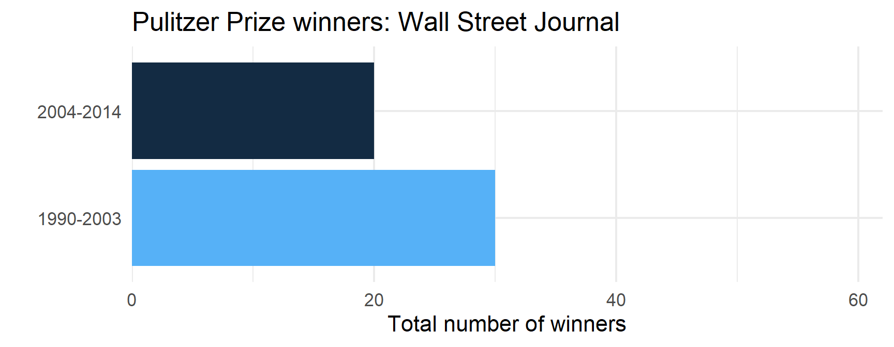
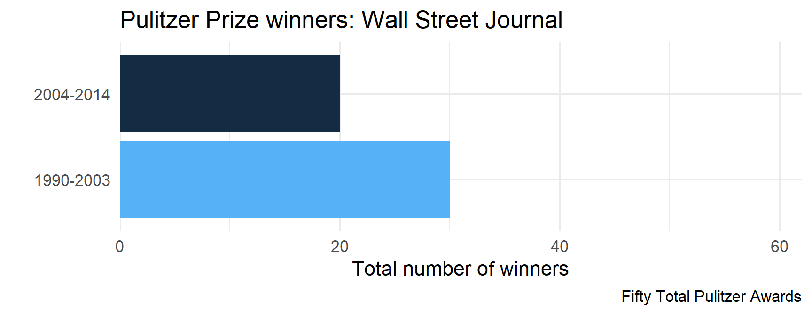

Week 5: Parallel Iterations & Looping Variants
University of Oregon
Spring 2026
Parallel Iterations & Looping Variants
Week 5
Agenda
- Discuss
map2_()*andpmap_()*(parallel iterations) walk()and friendsmodify()safely()reduce()
Learning objectives
- Understand the differences between
map,map2, andpmap - Know when to apply
walk()instead ofmap(), and why it may be useful - Understand the similarities and differences between
map()andmodify() - Diagnose errors with
safely()and understand other situations where it may be helpful - Collapsing/reducing lists with
purrr::reduce()orbase::Reduce()
Quick Review: nest_by()
dplyr::nest_by()
- creates a list column for each group, AND
- converts it to a
rowwisedata frame
Think of it as:
…and storing the remaining columns as a nested tibble ready for rowwise() applications
We’ll come back to this
map2()
map2()

Two examples
Basic simulations - iterating over two vectors
Plots by month, changing the title
1) Iterating over two vectors
- Simulate data from a normal distribution
- Vary \(n\) from 5 to 150 by increments of 5
- For each \(n\), vary \(\mu\) (mean) from -2 to 2 by increments of 0.25
How do we get all combinations?
expand.grid()
expand.grid()
Bonus: It turns it into a data frame!
Set conditions
Please follow along
Simulate!
List of 510
$ : num [1:5] 17.615 9.802 7.841 -20.103 0.796
$ : num [1:10] -0.319 9.856 2.326 -7.88 3.633 ...
$ : num [1:15] 17.41 -7.07 -7.69 -1.22 -3.65 ...
$ : num [1:20] -3.68 11.771 18.05 -1.853 -0.159 ...
$ : num [1:25] 9.48 -12.22 -11.8 7.25 -2.89 ...
$ : num [1:30] 9.141 -4.7 -6.922 -0.549 3.527 ...
$ : num [1:35] -8.37 -18.13 -3.17 -4.42 11.92 ...
$ : num [1:40] 6.725 -0.903 -12.57 -5.162 2.743 ...
$ : num [1:45] 0.194 -4.36 -2.848 -18.49 -4.076 ...
$ : num [1:50] -13.082 -3.126 -0.508 10.719 5.108 ...
$ : num [1:55] -9.86 -10.67 6.87 -12.27 2.56 ...
$ : num [1:60] 0.827 -1.192 1.545 7.898 5.989 ...
$ : num [1:65] -7.29 -11.42 -16.95 3.83 5.46 ...
$ : num [1:70] -15.1985 -0.0629 -2.785 -4.5467 1.4432 ...
$ : num [1:75] -20.75 -7.58 -16.31 -23.29 -7.63 ...
$ : num [1:80] -5.39 14.44 -10.66 7.13 -9.76 ...
$ : num [1:85] -14.94 -1.1 -10.77 6.04 7.58 ...
$ : num [1:90] 8.7 -8.63 13.04 -4.41 -8.51 ...
$ : num [1:95] -18.492 20.182 -10.029 0.162 0.658 ...
$ : num [1:100] 7.85 -28.97 1.81 7.38 -13.59 ...
$ : num [1:105] 18.48 -15.1 7.26 -14.6 6 ...
$ : num [1:110] -5.282 0.913 25.151 1.266 0.387 ...
$ : num [1:115] 8.45 15.45 1.36 6.25 -1.48 ...
$ : num [1:120] -2.97 -11.95 -6.71 -3.4 -1.28 ...
$ : num [1:125] -9.83 -7.65 -12.71 6.56 10.28 ...
$ : num [1:130] -23.21 -6.27 -7.33 -7.89 1.01 ...
$ : num [1:135] 8.38 -17.31 -6.12 -4.85 -6.62 ...
$ : num [1:140] 9.37 19.27 -2.24 -20.02 -6.71 ...
$ : num [1:145] 21.341 -6.96 -10.76 10.248 -0.171 ...
$ : num [1:150] -9.45 -1.2 -16.63 5.98 8.1 ...
$ : num [1:5] 6.44 -0.932 19.303 -8.525 -12.827
$ : num [1:10] 1.06 3.36 18.56 -3.57 -18.07 ...
$ : num [1:15] 18.87 -0.19 -6.35 -12.37 14.17 ...
$ : num [1:20] -14.69 1.91 -11.41 3.95 -7.93 ...
$ : num [1:25] -10.79 -22.55 7.71 4.51 -7.15 ...
$ : num [1:30] 8.145 -18.583 0.717 14.552 6.834 ...
$ : num [1:35] 5.82 -1.78 12.38 -3.15 -7.36 ...
$ : num [1:40] -10.58 2.89 2.8 -13.75 5.58 ...
$ : num [1:45] -0.896 10.126 4.685 -2.646 0.701 ...
$ : num [1:50] 2.06 -11.16 4.93 5.72 1.41 ...
$ : num [1:55] -18.39 -7.39 14.2 -2.23 3.89 ...
$ : num [1:60] 5.49 -2.33 -2.3 -13.44 -11.46 ...
$ : num [1:65] 3.75 -20.64 13.15 10.52 -12.68 ...
$ : num [1:70] -2.5 -5.43 -4.97 -5.09 14.47 ...
$ : num [1:75] -9.43 -3.45 9.31 2.44 -1.96 ...
$ : num [1:80] -13.074 15.403 0.445 -12.811 -11.293 ...
$ : num [1:85] 4.51 -16.3 -3.71 -10.18 -4.92 ...
$ : num [1:90] 3.34 -1.44 1.51 7.16 -12.68 ...
$ : num [1:95] -6.24 12.51 -8.37 -15.07 1.74 ...
$ : num [1:100] 3.1 12.06 -14.17 12.59 3.57 ...
$ : num [1:105] -13.41 9.88 -17.68 -22.26 10.54 ...
$ : num [1:110] -8.68 3.05 -2.36 12.56 -1.05 ...
$ : num [1:115] 6.19 1.67 -1.94 -4.93 -17.41 ...
$ : num [1:120] -12.36 -6.86 -26.62 9.92 3.75 ...
$ : num [1:125] -15.25 -10.29 3.15 9.83 -10.38 ...
$ : num [1:130] 5.15 3.04 3.95 12.74 -17.33 ...
$ : num [1:135] -10.59 9 -7.97 -8.62 4.98 ...
$ : num [1:140] -4.53 9.95 -8.86 -9.05 9.2 ...
$ : num [1:145] 1.98 8.69 -4.24 -8.81 -7.86 ...
$ : num [1:150] -13.611 9.302 -7.102 -0.811 -14.401 ...
$ : num [1:5] -4.351 11.154 0.974 12.401 -19.222
$ : num [1:10] -2.61 -4.07 10.92 2.22 -4.59 ...
$ : num [1:15] 4.39 -14.38 -13.38 3.72 5.58 ...
$ : num [1:20] 10.71 1.86 -4.3 -14.65 7.5 ...
$ : num [1:25] 5.21 -1.99 7.08 -21.47 1.29 ...
$ : num [1:30] -15.07 -16.056 9.015 -0.479 5.859 ...
$ : num [1:35] -7.41 12.48 -1.47 -8.58 -7.42 ...
$ : num [1:40] 6 4.48 5.22 8.19 8.54 ...
$ : num [1:45] -11.5 -8.45 7.51 11.38 -2.9 ...
$ : num [1:50] -13.23 -10.55 -10.89 -9.11 11.44 ...
$ : num [1:55] -12.192 -15.758 9.382 -0.825 11.867 ...
$ : num [1:60] 21.75 -2.92 6.56 10.9 1.18 ...
$ : num [1:65] 8.55 5.62 10.34 2.89 -9.76 ...
$ : num [1:70] 7.104 1.3363 2.0379 0.0704 0.8875 ...
$ : num [1:75] -6.84 -25.79 -18.42 -18.35 5.78 ...
$ : num [1:80] -2.73 7.82 10.06 1.18 5.07 ...
$ : num [1:85] 4.51 -14.18 -11.27 2.06 -4.99 ...
$ : num [1:90] 18.58 -5.33 -7.98 -6.13 -9.08 ...
$ : num [1:95] -8.97 13.74 19.15 3.36 -18.61 ...
$ : num [1:100] 8.49 -9.86 -0.5 -7.66 -12.54 ...
$ : num [1:105] -8.184 10.206 0.792 3.386 -7.591 ...
$ : num [1:110] 2.56 -15.4 3.03 8.14 -2.62 ...
$ : num [1:115] -0.546 -10.162 3.461 3.985 -6.592 ...
$ : num [1:120] -14.59 -7.39 13.15 3.39 14.93 ...
$ : num [1:125] 4.53 -1.55 7.47 14.08 9.83 ...
$ : num [1:130] -6.162 3.986 6.549 0.396 -0.167 ...
$ : num [1:135] -8.25 9.33 -19.86 15.64 1.3 ...
$ : num [1:140] -10.503 -12.303 -0.516 14.635 2.109 ...
$ : num [1:145] -5.845 7.338 9.221 -14.652 -0.214 ...
$ : num [1:150] 13.52 -8.52 3.74 -17.18 -2.85 ...
$ : num [1:5] 0.589 2.851 -8.252 -14.383 5.592
$ : num [1:10] 6.924 -10.102 -0.282 -6.724 -10.482 ...
$ : num [1:15] -7.49 -11.6 6.3 8.25 -23.69 ...
$ : num [1:20] -2.11 -2.4 3.21 9.04 1.6 ...
$ : num [1:25] 0.643 -7.251 6.647 3.507 -8.646 ...
$ : num [1:30] -5.22 2.12 2.78 13.22 -14.09 ...
$ : num [1:35] 2.49 -8.95 22.06 -10.03 -13.25 ...
$ : num [1:40] -22.69 -8.97 -12.88 14.63 11.13 ...
$ : num [1:45] -0.729 -15.964 9.578 -13.815 -1.693 ...
[list output truncated]Add it as a list column!
More powerful (this is my preferred method)
# A tibble: 510 × 3
n mu sim
<dbl> <dbl> <list>
1 5 -2 <dbl [5]>
2 10 -2 <dbl [10]>
3 15 -2 <dbl [15]>
4 20 -2 <dbl [20]>
5 25 -2 <dbl [25]>
6 30 -2 <dbl [30]>
7 35 -2 <dbl [35]>
8 40 -2 <dbl [40]>
9 45 -2 <dbl [45]>
10 50 -2 <dbl [50]>
# ℹ 500 more rowsUnnest
# A tibble: 39,525 × 3
n mu sim
<dbl> <dbl> <dbl>
1 5 -2 -13.2
2 5 -2 -5.45
3 5 -2 -9.88
4 5 -2 -19.6
5 5 -2 9.73
6 10 -2 -4.71
7 10 -2 11.3
8 10 -2 11.8
9 10 -2 4.81
10 10 -2 -15.3
# ℹ 39,515 more rowsChallenge
Can you replicate what we just did, but using a rowwise() approach?
Remember
mutate()expects each a vector of the same length as the data frame — one value per rowrnorm(n, mu, sd = 10)returns a vector of lengthn, not a single value- Without
list(),{dplyr}would try to unpack thosenvalues directly into the column, causing a length mismatch error - Wrapping in
list()boxes the vector into of length = 1- a list with one element
- so
mutate()sees exactly one element per row: a length-1 list containing the vector
With list():
row 1 → list(c(0.3, -1.2, 0.8)) ✓ length 1
row 2 → list(c(0.1, 2.4, ...)) ✓ length 1
Without list():
row 1 → c(0.3, -1.2, 0.8) ✗ length 3 — doesn’t fit in one row
2) Plots by month, changing the title
Please follow along
The data
# A tibble: 50 × 7
newspaper circ2004 circ2013 pctchg_circ num_finals1990_2003
<chr> <dbl> <dbl> <int> <int>
1 USA Today 2192098 1674306 -24 1
2 Wall Street Journal 2101017 2378827 13 30
3 New York Times 1119027 1865318 67 55
4 Los Angeles Times 983727 653868 -34 44
5 Washington Post 760034 474767 -38 52
6 New York Daily News 712671 516165 -28 4
7 New York Post 642844 500521 -22 0
8 Chicago Tribune 603315 414930 -31 23
9 San Jose Mercury News 558874 583998 4 4
10 Newsday 553117 377744 -32 12
# ℹ 40 more rows
# ℹ 2 more variables: num_finals2004_2014 <int>, num_finals1990_2014 <int>Prep data
# A tibble: 6 × 3
newspaper year_range n
<chr> <chr> <int>
1 USA Today 1990-2003 1
2 USA Today 2004-2014 1
3 Wall Street Journal 1990-2003 30
4 Wall Street Journal 2004-2014 20
5 New York Times 1990-2003 55
6 New York Times 2004-2014 62One plot
wsj <- pulitzer |>
filter(newspaper == "Wall Street Journal")
ggplot(wsj, aes(n, year_range)) +
geom_col(aes(fill = n)) +
scale_x_continuous(
limits = c(0, max(pulitzer$n)),
expand = c(0, 0)
) +
guides(fill = "none") +
labs(
title = "Pulitzer Prize winners: Wall Street Journal",
x = "Total number of winners",
y = ""
) 
Nest data
# A tibble: 50 × 2
# Groups: newspaper [50]
newspaper data
<chr> <list>
1 USA Today <tibble [2 × 2]>
2 Wall Street Journal <tibble [2 × 2]>
3 New York Times <tibble [2 × 2]>
4 Los Angeles Times <tibble [2 × 2]>
5 Washington Post <tibble [2 × 2]>
6 New York Daily News <tibble [2 × 2]>
7 New York Post <tibble [2 × 2]>
8 Chicago Tribune <tibble [2 × 2]>
9 San Jose Mercury News <tibble [2 × 2]>
10 Newsday <tibble [2 × 2]>
# ℹ 40 more rowsProduce all plots
You try first!
Don’t worry about the correct title yet
Solution
Just the plots
# A tibble: 50 × 3
# Groups: newspaper [50]
newspaper data plot
<chr> <list> <list>
1 USA Today <tibble [2 × 2]> <ggplt2::>
2 Wall Street Journal <tibble [2 × 2]> <ggplt2::>
3 New York Times <tibble [2 × 2]> <ggplt2::>
4 Los Angeles Times <tibble [2 × 2]> <ggplt2::>
5 Washington Post <tibble [2 × 2]> <ggplt2::>
6 New York Daily News <tibble [2 × 2]> <ggplt2::>
7 New York Post <tibble [2 × 2]> <ggplt2::>
8 Chicago Tribune <tibble [2 × 2]> <ggplt2::>
9 San Jose Mercury News <tibble [2 × 2]> <ggplt2::>
10 Newsday <tibble [2 × 2]> <ggplt2::>
# ℹ 40 more rowsAdd title
library(glue)
p <- by_newspaper |>
mutate(
plot = map2(data, newspaper,
~.x |>
ggplot(aes(n, year_range)) +
geom_col(aes(fill = n)) +
scale_x_continuous(
limits = c(0, max(pulitzer$n)),
expand = c(0, 0)
) +
guides(fill = "none") +
labs(
title = glue("Pulitzer Prize winners: {.y}"), # or paste("Pulitzer Prize winners: ", .y)
x = "Total number of winners",
y = ""
)
)
)# A tibble: 50 × 3
# Groups: newspaper [50]
newspaper data plot
<chr> <list> <list>
1 USA Today <tibble [2 × 2]> <ggplt2::>
2 Wall Street Journal <tibble [2 × 2]> <ggplt2::>
3 New York Times <tibble [2 × 2]> <ggplt2::>
4 Los Angeles Times <tibble [2 × 2]> <ggplt2::>
5 Washington Post <tibble [2 × 2]> <ggplt2::>
6 New York Daily News <tibble [2 × 2]> <ggplt2::>
7 New York Post <tibble [2 × 2]> <ggplt2::>
8 Chicago Tribune <tibble [2 × 2]> <ggplt2::>
9 San Jose Mercury News <tibble [2 × 2]> <ggplt2::>
10 Newsday <tibble [2 × 2]> <ggplt2::>
# ℹ 40 more rowsLook at a couple plots
Challenge
(You can probably guess where this is going)
Can you reproduce the prior plots using a rowwise() approach?
Solution
pulitzer |>
nest_by(newspaper) |>
mutate(
plot = list(
ggplot(data, aes(n, year_range)) +
geom_col(aes(fill = n)) +
scale_x_continuous(
limits = c(0, max(pulitzer$n)),
expand = c(0, 0)
) +
guides(fill = "none") +
labs(
title = glue("Pulitzer Prize winners: {newspaper}"),
x = "Total number of winners",
y = ""
)
)
)# A tibble: 50 × 3
# Rowwise: newspaper
newspaper data plot
<chr> <list<tibble[,2]>> <list>
1 Arizona Republic [2 × 2] <ggplt2::>
2 Atlanta Journal Constitution [2 × 2] <ggplt2::>
3 Baltimore Sun [2 × 2] <ggplt2::>
4 Boston Globe [2 × 2] <ggplt2::>
5 Boston Herald [2 × 2] <ggplt2::>
6 Charlotte Observer [2 × 2] <ggplt2::>
7 Chicago Sun-Times [2 × 2] <ggplt2::>
8 Chicago Tribune [2 × 2] <ggplt2::>
9 Cleveland Plain Dealer [2 × 2] <ggplt2::>
10 Columbus Dispatch [2 × 2] <ggplt2::>
# ℹ 40 more rowspmap()
Iterating over \(n\) vectors

But we can have as many elements p as we want
Simulation
- Simulate data from a normal distribution
- Vary \(n\) from 5 to 150 by increments of 5
- For each \(n\), vary \(\mu\) (mean) from -2 to 2 by increments of 0.25
- For each \(n\) and \(\mu\), vary each \(\sigma\) (SD) from 1 to 3 by increments of 0.1
Simulation
[1] 10710Full Simulation
List of 10710
$ : num [1:5] -2.35 -4.13 -1.8 -1.78 -3.41
$ : num [1:10] 0.0818 -1.5213 -1.2887 -3.5888 -0.5609 ...
$ : num [1:15] -1.51 -2.23 -1.61 -3.25 -3.57 ...
$ : num [1:20] -0.428 -0.494 -1.998 -1.874 -1.427 ...
$ : num [1:25] -1.92 -2.29 -1.91 -2.36 -2.1 ...
$ : num [1:30] -1.38 -2.3 -2.85 -1.79 -2.57 ...
$ : num [1:35] -2.64 -1.98 -2.49 -1.98 -1.94 ...
$ : num [1:40] -1.6 -2.17 -1.77 -1.64 -1.71 ...
$ : num [1:45] -1.75 -3.64 -2.53 -2.35 -1.68 ...
$ : num [1:50] -2.57 -0.818 -0.907 -2.604 -0.55 ...
$ : num [1:55] -2.94 -3.16 -2.33 -2.68 -2.3 ...
$ : num [1:60] -1.168 -3.969 -3.254 -0.734 -2.905 ...
$ : num [1:65] -0.727 -4.017 -1.778 -2.989 -2.951 ...
$ : num [1:70] -1.338 -1.144 -0.479 -3.696 -0.724 ...
$ : num [1:75] -1.22 -2.08 -1.91 -2.42 -1.84 ...
$ : num [1:80] -2.87 -2.74 -2.61 -2.67 -1.52 ...
$ : num [1:85] -3.327 -0.278 -3.975 -3.252 -4.366 ...
$ : num [1:90] -0.913 -1.484 -2.951 -2.633 -1.424 ...
$ : num [1:95] -1.868 -0.811 -0.6 -1.148 -0.402 ...
$ : num [1:100] -1.48 -1.35 -4.07 -2.15 -2.04 ...
$ : num [1:105] -2.13 -1.77 -1.14 -1.61 -1.22 ...
$ : num [1:110] -2.34 -2.5 -2.43 -2.13 -2.94 ...
$ : num [1:115] -1.712 -2.493 -2.357 -2.227 -0.891 ...
$ : num [1:120] -1.58 -2.5 -2.57 -2.66 -2.33 ...
$ : num [1:125] -0.995 -3.102 -2.434 -0.736 -0.413 ...
$ : num [1:130] -2.186 -1.389 -2.216 0.259 -0.396 ...
$ : num [1:135] -1.65 -2.75 -1.15 -3.21 -1.61 ...
$ : num [1:140] -4.402 -4.367 -2.516 -0.902 -1.592 ...
$ : num [1:145] -1.248 -4.564 -2.384 -0.658 -2.016 ...
$ : num [1:150] -2.751 -4.358 -1.701 -2.35 -0.842 ...
$ : num [1:5] -1.168 -3.672 -2.953 0.136 -1.909
$ : num [1:10] -2.43 -1.72 -2.49 -1.95 -1.12 ...
$ : num [1:15] -1.14 -1.52 -1.93 -1.47 -1.65 ...
$ : num [1:20] -2.55 -2.46 -2.73 -2.05 -2.54 ...
$ : num [1:25] -0.359 -2.844 -2.118 -3.302 -1.842 ...
$ : num [1:30] -3.339 -0.816 -1.517 -1.046 -0.545 ...
$ : num [1:35] -2.16 -3.6 -1.44 -2.96 -1.97 ...
$ : num [1:40] -1.919 -0.935 -0.787 -1.817 -0.856 ...
$ : num [1:45] -2.79 -2.71 -1.96 -2.31 -2.45 ...
$ : num [1:50] -0.584 -1.479 -2.726 -3.478 -1.452 ...
$ : num [1:55] -1.274 -2.735 -3.089 -0.816 -2.106 ...
$ : num [1:60] -0.925 -0.851 -1.045 -0.833 -0.705 ...
$ : num [1:65] -1.71 -2.86 -3.7 -1.9 -1.15 ...
$ : num [1:70] -1.479 -2.077 -0.725 -0.668 -3.181 ...
$ : num [1:75] -0.811 -0.442 -0.74 -1.816 -1.877 ...
$ : num [1:80] -2.279 -0.792 -2.423 -1.811 -2.088 ...
$ : num [1:85] -2.71 -3.4 -1.4 -2.25 -2.08 ...
$ : num [1:90] -1.2 -1.17 -1.57 -1.07 -2.69 ...
$ : num [1:95] -2.718 -1.066 -0.925 -2.266 -1.836 ...
$ : num [1:100] -2.99 -2.22 -1.76 -2.36 -2.05 ...
$ : num [1:105] -0.417 0.644 -2.483 -2.568 -1.298 ...
$ : num [1:110] -1.297 -0.939 -1.212 -1.449 -3.616 ...
$ : num [1:115] -1.47 -1.91 -1.49 -2.22 -1.99 ...
$ : num [1:120] -2.009 -2.375 -0.529 -2.793 -1.899 ...
$ : num [1:125] -3.333 -0.698 -0.48 -3.281 -2.709 ...
$ : num [1:130] -3.12 -2.94 -1.73 -2.11 -1.13 ...
$ : num [1:135] -1.44 -1.44 -1.53 -1.88 -2.29 ...
$ : num [1:140] -0.992 -3.579 -1.132 -1.415 -1.821 ...
$ : num [1:145] -2.524 -1.436 -2.296 -0.6 -0.623 ...
$ : num [1:150] -3.372 -0.517 -1.804 -2.229 -2.134 ...
$ : num [1:5] -2.37 -1.49 -2.76 -1.44 -1.61
$ : num [1:10] -1.3461 -0.0869 -1.1112 -4.0972 0.3422 ...
$ : num [1:15] -1.171 -4.325 -1.786 -0.817 -0.983 ...
$ : num [1:20] -1.865 -1.839 -0.182 -1.65 -2.371 ...
$ : num [1:25] -1.761 -2.147 -1.208 0.524 -1.645 ...
$ : num [1:30] -2.381 0.206 -0.902 -1.261 -2.206 ...
$ : num [1:35] -3.974 -1.269 -2.378 -0.529 -1.295 ...
$ : num [1:40] -4.012 -1.373 -0.732 -1.559 -1.18 ...
$ : num [1:45] -1.005 -0.593 -2.127 -0.877 -1.972 ...
$ : num [1:50] -2.491 -2.093 -2.354 -1.698 -0.337 ...
$ : num [1:55] -0.805 -2.989 -1.405 -2.738 -0.019 ...
$ : num [1:60] -3.52 -1.22 -2.13 -1.97 -2.15 ...
$ : num [1:65] -2.616 -1.119 -0.619 -1.411 -1.6 ...
$ : num [1:70] -2.47 -0.39 -1.78 -1.88 -2.21 ...
$ : num [1:75] -1.626 0.172 -2.277 -1.628 -3.98 ...
$ : num [1:80] -0.9196 -0.0297 -1.7448 -0.9149 -0.3239 ...
$ : num [1:85] -1.377 -1.378 -2.137 -0.594 -1.819 ...
$ : num [1:90] 0.298 -1.794 -0.548 -0.535 -0.74 ...
$ : num [1:95] 0.182 -1.65 -2.369 -1.883 -1.772 ...
$ : num [1:100] -0.547 -1.383 -2.247 -1.584 -2.289 ...
$ : num [1:105] -0.729 -2.155 -4.32 -3.427 -1.201 ...
$ : num [1:110] -0.828 -1.759 -2.066 -1.915 -1.274 ...
$ : num [1:115] -0.601 -2.466 -0.456 -3.085 -1.582 ...
$ : num [1:120] -0.127 -1.241 -1.407 -2.643 -1.909 ...
$ : num [1:125] -2.063 -2.638 -2.154 -0.066 -2.144 ...
$ : num [1:130] -1.93 -1.88 -1.92 -3.49 -3.03 ...
$ : num [1:135] -1.3413 -1.4529 -0.989 -1.0685 -0.0513 ...
$ : num [1:140] -1.458 -2.77 -1.982 -0.798 -0.746 ...
$ : num [1:145] -0.0312 -3.923 -1.8777 -1.1347 -1.0245 ...
$ : num [1:150] -2.671 -0.915 -1.574 -2.685 -1.285 ...
$ : num [1:5] -1.548 1.44 -0.875 0.195 -2.483
$ : num [1:10] -1.84 -0.3 -2.23 -3.12 -1.14 ...
$ : num [1:15] -1.322 0.169 -1.465 -0.806 -0.497 ...
$ : num [1:20] -1.22 -1.06 -1.57 -1.07 -1.62 ...
$ : num [1:25] 0.1003 -1.0701 -1.7332 -1.2915 -0.0549 ...
$ : num [1:30] -1.566 -0.909 -2.969 -1.743 -0.805 ...
$ : num [1:35] -1.641 -0.164 0.18 -1.476 1.092 ...
$ : num [1:40] -0.69 -3.4889 -2.3505 -0.0896 -1.3964 ...
$ : num [1:45] -1.584 -0.507 -2.297 -0.737 -0.535 ...
[list output truncated]Alternative specification
List of 10710
$ : num [1:5] -2.556 -0.475 -1.852 -2.746 -1.856
$ : num [1:10] -1.3822 0.0166 -0.1988 -2.9139 0.187 ...
$ : num [1:15] -1.698 -2.273 -2.379 -3.409 -0.978 ...
$ : num [1:20] -2.26 -2.25 -2.37 -1.94 -1.81 ...
$ : num [1:25] -2.54 -2.19 -4.08 -1.15 -2.18 ...
$ : num [1:30] -2.71 -1.84 -1.95 -4.27 -1.79 ...
$ : num [1:35] -1.27 -2.01 -2.78 -1.1 -2.48 ...
$ : num [1:40] -1.403 -1.205 -1.498 -0.947 -3.483 ...
$ : num [1:45] -2.09 -1.88 -1.58 -2.07 -2.63 ...
$ : num [1:50] -2.13 -2.02 -1.82 -1.76 -2.58 ...
$ : num [1:55] -1.45 -1.88 -1.72 -2.43 -1.84 ...
$ : num [1:60] -2.816 -1.163 -0.611 -3.086 -2.139 ...
$ : num [1:65] -1.46 -2.14 -2.3 -2.27 -1.38 ...
$ : num [1:70] -2.54 -1.25 -1.9 -1 -2.48 ...
$ : num [1:75] -3.2 -1.98 -2.43 -3 -1.36 ...
$ : num [1:80] -1.887 -2.708 -0.292 -2.228 -2.776 ...
$ : num [1:85] -1.671 -2.285 -0.597 -1.77 -1.38 ...
$ : num [1:90] -0.969 -0.694 -1.988 -1.06 0.864 ...
$ : num [1:95] -3.57 -0.57 -3.19 -3.28 -2.06 ...
$ : num [1:100] -1.797 -0.187 -0.888 -1.628 -1.753 ...
$ : num [1:105] -2.92 -1.31 -2.85 -2.16 -1.3 ...
$ : num [1:110] -2.23 -1.54 -2.47 -2.75 -1.05 ...
$ : num [1:115] -1.98 -2.37 -3.19 -2.14 -1.61 ...
$ : num [1:120] -1.38 -1.75 -1.86 -2.06 -1.84 ...
$ : num [1:125] -1.87 -2.15 -1.2 -3.1 -2.61 ...
$ : num [1:130] -1.213 -1.644 -1.766 -0.359 -2.14 ...
$ : num [1:135] -1.695 -0.856 -2.146 -2.406 -1.357 ...
$ : num [1:140] -0.743 -1.358 -1.383 -2.672 -2.947 ...
$ : num [1:145] -1.707 -0.575 -2.017 -1.98 -1.6 ...
$ : num [1:150] -3.855 -2.629 -0.904 -0.547 -2.69 ...
$ : num [1:5] -1.88 -1.33 -3.36 -2.32 -1.08
$ : num [1:10] -2.811 -0.715 -1.41 -2.009 -1.715 ...
$ : num [1:15] -0.435 0.531 -0.783 -1.994 -1.28 ...
$ : num [1:20] -1.6259 -0.984 -0.0113 -2.6376 -1.371 ...
$ : num [1:25] -0.129 -2.462 -2.241 -1.278 -4.324 ...
$ : num [1:30] -1.06 -1.01 -1.31 -3.15 0.24 ...
$ : num [1:35] -2.88 -2.76 -2.38 -1.07 -1.01 ...
$ : num [1:40] -1.325 -0.985 -1.987 -2.223 -2.686 ...
$ : num [1:45] -0.629 -2.433 -1.723 -1.886 -0.288 ...
$ : num [1:50] -2.02 -1.47 -2.45 -1.04 -2.82 ...
$ : num [1:55] -2.56 -2.59 -1.75 -2.56 -4.51 ...
$ : num [1:60] 0.299 -1.441 -1.786 -1.394 -2.611 ...
$ : num [1:65] 0.213 -1.351 -2.419 -0.512 -3.703 ...
$ : num [1:70] -0.713 -1.872 -2.454 -0.951 -2.694 ...
$ : num [1:75] -0.782 -2.005 -2.407 -0.978 -1.331 ...
$ : num [1:80] -1.98 -2.35 -1.11 -1.96 -1.22 ...
$ : num [1:85] -1.741 0.233 -0.576 -1.776 -2.24 ...
$ : num [1:90] -2.7 -1.31 -3.06 -1.35 -1.51 ...
$ : num [1:95] -0.669 -2.211 -1.342 -1.473 -4.37 ...
$ : num [1:100] -1.66 -2.94 -2.96 -2.29 -1.51 ...
$ : num [1:105] -1.06 -1.95 -1.83 -3.28 -1.61 ...
$ : num [1:110] 0.279 -1.688 -2.644 -1.698 -2.725 ...
$ : num [1:115] -3.3095 -1.416 0.8281 -0.0356 -0.7156 ...
$ : num [1:120] -1.89 -2.16 -1.74 -2.38 -1.8 ...
$ : num [1:125] -1.51 -2.1 -3.04 -1.96 -2.17 ...
$ : num [1:130] -1.35 -2.61 -2.1 -1.38 -1.98 ...
$ : num [1:135] -1.454 -2.407 -1.564 -0.859 -1.861 ...
$ : num [1:140] -1.51 -1.69 -2.36 -1.4 -1.34 ...
$ : num [1:145] -0.771 -1.262 -0.21 -2.275 -1.6 ...
$ : num [1:150] -0.114 -3.171 -2.364 -1.463 -5.035 ...
$ : num [1:5] -3.784 -1.304 -1.543 -0.485 -0.197
$ : num [1:10] -1.555 -0.995 -1.056 0.306 -2.744 ...
$ : num [1:15] 0.709 -0.544 -1.613 -1.937 -0.868 ...
$ : num [1:20] -0.293 -0.137 -1.399 -1.23 -1.877 ...
$ : num [1:25] -2.84 -3.82 -1.83 -1.11 -2.17 ...
$ : num [1:30] 0.334 -1.937 -3.723 -2.465 -3.293 ...
$ : num [1:35] -2.368 -0.637 -3.305 -0.96 -3.414 ...
$ : num [1:40] -1.77 -3.268 -0.375 -0.721 -1.399 ...
$ : num [1:45] -1.841 -0.968 -2.29 1.541 -1.491 ...
$ : num [1:50] -1.192 -0.558 -2.275 -2.935 -0.998 ...
$ : num [1:55] -2.702 -0.942 -0.835 -3.656 -1.711 ...
$ : num [1:60] -1.656 -1.878 -0.924 -1.747 -2.125 ...
$ : num [1:65] -2.028 -2.159 -2.122 -2.199 -0.851 ...
$ : num [1:70] -1.443 -2.463 -0.715 -0.839 0.335 ...
$ : num [1:75] -1.734 -1.19 -0.414 -2.287 -2.336 ...
$ : num [1:80] 0.307 -2.934 -2.397 -2.066 -1.771 ...
$ : num [1:85] -1.759 -1.565 -1.854 -2.211 -0.545 ...
$ : num [1:90] -4.63 -1.45 -2.93 -1.74 -1.59 ...
$ : num [1:95] -1.071 0.685 -1.308 -2.898 -2.285 ...
$ : num [1:100] -2.512 -2.63 -0.78 -2.23 0.442 ...
$ : num [1:105] -0.614 -2.672 -1.093 -1.635 -2.154 ...
$ : num [1:110] -1.572 -2.478 -0.831 -3.153 -1.646 ...
$ : num [1:115] -2.712 -1.039 -3.666 -1.734 -0.662 ...
$ : num [1:120] -0.901 -1.219 -1.749 -0.891 -1.029 ...
$ : num [1:125] -1.35 -1.07 -2.33 -2.15 -1.86 ...
$ : num [1:130] -3.304 -1.595 -1.202 -1.71 -0.196 ...
$ : num [1:135] -1.824 -0.347 -2.358 -0.671 -1.053 ...
$ : num [1:140] -1.743 -0.325 -0.946 -1.817 -1.662 ...
$ : num [1:145] -2.92 -1.68 -2.33 -1.61 -2.04 ...
$ : num [1:150] -1.068 -0.934 -1.046 -1.506 -2.326 ...
$ : num [1:5] -1.02 -1.61 -2.6 -1.52 -3.6
$ : num [1:10] -0.5283 -2.9211 0.0958 -0.6775 -3.5957 ...
$ : num [1:15] -1.842 -0.792 -0.324 -1.943 -1.565 ...
$ : num [1:20] -1.4 -0.828 -1.009 -0.746 -0.812 ...
$ : num [1:25] -1.21 -2.15 -1.46 -1.24 -1.62 ...
$ : num [1:30] -1.86 -1.45 -1.45 -2.1 -2.89 ...
$ : num [1:35] -1.714 -1.532 -0.651 -1.038 -0.611 ...
$ : num [1:40] 0.313 0.206 -2.394 -1.902 -3.189 ...
$ : num [1:45] -2.708 -0.955 0.449 -1.27 -0.716 ...
[list output truncated]Why the .. prefix?
.or.xis used as the placeholder inmap().xand.yare the convention formap2()- So for multi-argument
pmap(), the..prefix is{purrr}’s convention for anonymous positional arguments- avoid confusion with other functions
- signals “this is the \(p^{th}\) argument in the parallel list”
Simpler still
Maybe a little too clever
A data frame is a list so…
List of 10710
$ : num [1:5] -0.566 -1.279 -1.123 -2.115 -0.565
$ : num [1:10] -2.04 -2.45 -1.95 -3.09 -3.55 ...
$ : num [1:15] -1.07 -2.66 -3.46 -1.86 -2.48 ...
$ : num [1:20] -1.427 -1.375 -2.941 -0.727 0.14 ...
$ : num [1:25] -2.366 -0.733 -1.89 -2.696 1.812 ...
$ : num [1:30] -2.263 -2.374 -0.676 -2.246 -2.178 ...
$ : num [1:35] -1.92 -2.56 -1.98 -2.52 -3.12 ...
$ : num [1:40] -1.04 -1.08 -1.02 -2.51 -3.77 ...
$ : num [1:45] -3.49 -1.98 -2.51 -1.28 -1.84 ...
$ : num [1:50] -1.57 -1.8 -2.33 -3.1 -1.69 ...
$ : num [1:55] -1.877 -1.788 -0.684 -2.948 -2.069 ...
$ : num [1:60] -1.99 -1.78 -3.44 -1.47 -2.69 ...
$ : num [1:65] -0.951 -0.276 -3.067 -0.718 -2.355 ...
$ : num [1:70] -2.21 -1.6 -2.93 -3.49 -2.69 ...
$ : num [1:75] -1.903 -3.008 -0.902 -2.496 -1.125 ...
$ : num [1:80] -1.09 -1.85 -1.71 -3.03 -2.83 ...
$ : num [1:85] -0.591 -1.812 -3.172 -1.728 -3.477 ...
$ : num [1:90] -2.429 -0.856 -2.192 0.337 -2.317 ...
$ : num [1:95] -2.8319 -0.0416 -3.1962 -1.7074 -1.9134 ...
$ : num [1:100] -2.726 -2.108 -0.831 -1.117 -1.333 ...
$ : num [1:105] -2.29 -2.76 -3.4 -1.06 -2.29 ...
$ : num [1:110] -2.292 -0.723 -3.117 -2.215 -2.171 ...
$ : num [1:115] -3.024 -0.936 -1.842 -0.495 -1.854 ...
$ : num [1:120] -2.07 -4.55 -3.4 -1.14 -1.29 ...
$ : num [1:125] -2.87 -2.55 -3.76 -2.48 -2.14 ...
$ : num [1:130] -1.15 -1.69 -3.13 -1.78 -2.34 ...
$ : num [1:135] -3.124 -1.969 -3.89 -2.154 -0.668 ...
$ : num [1:140] -0.688 -2.1 -2.875 -3.368 -2.353 ...
$ : num [1:145] -2.779 -2.957 -3.504 -1.256 -0.914 ...
$ : num [1:150] -0.33 -2.06 -4.01 -2.93 -2.07 ...
$ : num [1:5] -0.741 -2.567 -2.404 -1.569 -1.917
$ : num [1:10] -2.05 -3.34 -2.31 -2.66 -2.71 ...
$ : num [1:15] -1.075 -1.75 -2.205 -0.885 -2.614 ...
$ : num [1:20] -1.95 -2.52 -2.27 -2.53 -1.52 ...
$ : num [1:25] -0.915 -2.513 -2.162 -2.899 -2.403 ...
$ : num [1:30] 0.0906 -1.2608 -4.2574 -0.5496 -0.1308 ...
$ : num [1:35] -2.7 -1.79 -2.98 -2.74 -2.19 ...
$ : num [1:40] -0.6375 -0.0477 -1.6888 -1.3023 0.6911 ...
$ : num [1:45] -2.433 -1.314 -2.693 -0.958 -0.892 ...
$ : num [1:50] -1.7 -0.734 -1.795 -1.314 -1.997 ...
$ : num [1:55] -3.033 -1.847 -2.708 -1.899 0.634 ...
$ : num [1:60] -1.49 -3.46 -1.01 -1.35 -2.99 ...
$ : num [1:65] -3.06 -2.06 -2.05 -2.27 -1.75 ...
$ : num [1:70] -1.406 -1.112 -1.673 -2.073 -0.973 ...
$ : num [1:75] -1.67 -1.94 -1.54 -1.6 -2.29 ...
$ : num [1:80] -1.3 -2.69 -2.58 -2.18 -1.91 ...
$ : num [1:85] -1.56 -1.64 -1.64 -1.34 -1.95 ...
$ : num [1:90] -2.204 -1.809 -2.98 -0.187 -1.22 ...
$ : num [1:95] -2.238 -0.538 -1.458 -2.528 -0.673 ...
$ : num [1:100] -2.036 -0.962 -3.062 -1.729 -2.417 ...
$ : num [1:105] -2.046 -1.739 -1.468 -3.466 -0.417 ...
$ : num [1:110] -0.762 -1.678 -2.519 -2.237 -1.272 ...
$ : num [1:115] -1.596 -2.051 -0.53 -2.252 0.288 ...
$ : num [1:120] -0.756 -2.681 -1.147 -0.708 0.179 ...
$ : num [1:125] -2.484 -1.961 -0.804 -2.115 -0.879 ...
$ : num [1:130] -1.54 -0.708 -1.95 -2.034 -3.089 ...
$ : num [1:135] -2.314 -1.149 0.211 -1.853 -2.023 ...
$ : num [1:140] -0.13 -1.54 -0.24 -0.26 -1.69 ...
$ : num [1:145] -0.614 -1.244 -3.214 -0.97 -1.796 ...
$ : num [1:150] -0.571 -0.921 -1.077 -3.054 -1.457 ...
$ : num [1:5] -1.628 -1.9 -0.789 -1.268 -1.822
$ : num [1:10] -2.44 -2.56 -1.12 -1.07 -1.88 ...
$ : num [1:15] -1.08 -1.38 -1.87 -2.57 -3.5 ...
$ : num [1:20] -1.09 -2.16 -1.43 -2.7 -2.8 ...
$ : num [1:25] -2.142 -1.217 -3.576 1.302 0.315 ...
$ : num [1:30] -2.65 -1.58 -1.72 -1.49 -2.16 ...
$ : num [1:35] -3.377 0.244 -2.15 -0.17 -0.882 ...
$ : num [1:40] 0.295 -2.077 -0.254 -0.696 -1.792 ...
$ : num [1:45] -1.192 0.392 -1.891 -1.902 -1.99 ...
$ : num [1:50] -1.2245 -1.7738 -1.3962 -0.0908 -2.9536 ...
$ : num [1:55] -1.286 -1.855 -1.301 -2.313 -0.998 ...
$ : num [1:60] -1.96 -1.988 -1.802 -0.233 -1.668 ...
$ : num [1:65] -1.59193 -1.8707 0.00548 -3.08835 -1.70266 ...
$ : num [1:70] -1.66 -1.16 -1.11 -1.68 -2.61 ...
$ : num [1:75] -1.045 -0.689 -2.053 -3.537 0.106 ...
$ : num [1:80] -1.202 -1.875 -0.686 -1.79 -2.77 ...
$ : num [1:85] -2.89 1.29 -2.07 -2.2 -2.41 ...
$ : num [1:90] -2.0027 -0.2414 -1.8266 -0.9824 0.0506 ...
$ : num [1:95] -1.512 -1.552 -0.564 -1.199 -1.367 ...
$ : num [1:100] -0.591 -2.077 -1.461 -1.263 -1.915 ...
$ : num [1:105] -1.55319 -2.20622 0.00418 -1.67645 -0.76071 ...
$ : num [1:110] -2.093 -1.017 -2.764 -2.782 -0.591 ...
$ : num [1:115] -2.596 -2.283 -0.891 -1.127 -1.606 ...
$ : num [1:120] -1.8 -2.42 -1.17 -1.36 -1.14 ...
$ : num [1:125] -1.906 -1.316 -0.786 -1.633 1.163 ...
$ : num [1:130] -2.71 -1.42 -1.39 -1.68 -3.23 ...
$ : num [1:135] -0.423 -1.535 0.142 -1.301 -1.848 ...
$ : num [1:140] -0.6087 -0.0216 -1.9288 -2.2128 -2.9255 ...
$ : num [1:145] -0.84 -2.056 -1.663 -0.549 -2.939 ...
$ : num [1:150] -0.739 -1.25 -0.273 -2.385 -1.613 ...
$ : num [1:5] -0.723 -0.127 -2.576 -1.688 -1.977
$ : num [1:10] 1 -1.5 -2.77 -2.78 -1.56 ...
$ : num [1:15] -1.0272 0.0929 -1.6995 -1.7574 -1.4767 ...
$ : num [1:20] -2.01 -2.73 -1.15 -2.52 -1.88 ...
$ : num [1:25] -1.972 -0.7668 -0.0178 -1.5133 -1.8527 ...
$ : num [1:30] -1.41 -1.2 -3.07 -1.73 -1.89 ...
$ : num [1:35] -3.13 -0.901 -0.842 -1.809 -0.861 ...
$ : num [1:40] -1.721 -1.747 1.233 0.318 -0.747 ...
$ : num [1:45] -2.893 -1.733 0.856 -1.636 -0.59 ...
[list output truncated]List column version
This I like best
# A tibble: 10,710 × 4
n mu sd sim
<dbl> <dbl> <dbl> <list>
1 5 -2 1 <dbl [5]>
2 10 -2 1 <dbl [10]>
3 15 -2 1 <dbl [15]>
4 20 -2 1 <dbl [20]>
5 25 -2 1 <dbl [25]>
6 30 -2 1 <dbl [30]>
7 35 -2 1 <dbl [35]>
8 40 -2 1 <dbl [40]>
9 45 -2 1 <dbl [45]>
10 50 -2 1 <dbl [50]>
# ℹ 10,700 more rowsUnnest
# A tibble: 830,025 × 4
n mu sd sim
<dbl> <dbl> <dbl> <dbl>
1 5 -2 1 -3.11
2 5 -2 1 -2.29
3 5 -2 1 -0.742
4 5 -2 1 -3.34
5 5 -2 1 -2.40
6 10 -2 1 -1.09
7 10 -2 1 -2.30
8 10 -2 1 -0.303
9 10 -2 1 -3.50
10 10 -2 1 -1.03
# ℹ 830,015 more rowsReplicate with rowwise()`
You try first
# A tibble: 830,025 × 4
n mu sd sim
<dbl> <dbl> <dbl> <dbl>
1 5 -2 1 -4.21
2 5 -2 1 -0.923
3 5 -2 1 -0.840
4 5 -2 1 -1.68
5 5 -2 1 -0.623
6 10 -2 1 -0.284
7 10 -2 1 -2.80
8 10 -2 1 -2.74
9 10 -2 1 -2.32
10 10 -2 1 -2.97
# ℹ 830,015 more rowsPlot Caption
Add a caption stating the total number of Pulitzer prize winners across years
# A tibble: 100 × 3
newspaper year_range n
<chr> <chr> <int>
1 USA Today 1990-2003 1
2 USA Today 2004-2014 1
3 Wall Street Journal 1990-2003 30
4 Wall Street Journal 2004-2014 20
5 New York Times 1990-2003 55
6 New York Times 2004-2014 62
7 Los Angeles Times 1990-2003 44
8 Los Angeles Times 2004-2014 41
9 Washington Post 1990-2003 52
10 Washington Post 2004-2014 48
# ℹ 90 more rowsAdd column for total Pulitzers
# A tibble: 100 × 4
# Groups: newspaper [50]
newspaper year_range n tot
<chr> <chr> <int> <int>
1 USA Today 1990-2003 1 2
2 USA Today 2004-2014 1 2
3 Wall Street Journal 1990-2003 30 50
4 Wall Street Journal 2004-2014 20 50
5 New York Times 1990-2003 55 117
6 New York Times 2004-2014 62 117
7 Los Angeles Times 1990-2003 44 85
8 Los Angeles Times 2004-2014 41 85
9 Washington Post 1990-2003 52 100
10 Washington Post 2004-2014 48 100
# ℹ 90 more rowsStraightfoward approach
Create a column to represent exactly the label you want
# A tibble: 100 × 2
# Groups: newspaper [50]
newspaper label
<chr> <glue>
1 USA Today Two Total Pulitzer Awards
2 USA Today Two Total Pulitzer Awards
3 Wall Street Journal Fifty Total Pulitzer Awards
4 Wall Street Journal Fifty Total Pulitzer Awards
5 New York Times One Hundred Seventeen Total Pulitzer Awards
6 New York Times One Hundred Seventeen Total Pulitzer Awards
7 Los Angeles Times Eighty-Five Total Pulitzer Awards
8 Los Angeles Times Eighty-Five Total Pulitzer Awards
9 Washington Post One Hundred Total Pulitzer Awards
10 Washington Post One Hundred Total Pulitzer Awards
# ℹ 90 more rowsProduce one plot
wsj2 <- pulitzer |>
filter(newspaper == "Wall Street Journal")
wsj2 |>
ggplot(aes(n, year_range)) +
geom_col(aes(fill = n)) +
scale_x_continuous(
limits = c(0, max(pulitzer$n)),
expand = c(0, 0)
) +
guides(fill = "none") +
labs(
title = glue("Pulitzer Prize winners: Wall Street Journal"),
x = "Total number of winners",
y = "",
caption = unique(wsj2$label)
)Produce one plot

Produce all plots
First nest
# A tibble: 50 × 3
# Groups: newspaper, label [50]
newspaper label data
<chr> <glue> <list>
1 USA Today Two Total Pulitzer Awards <tibble>
2 Wall Street Journal Fifty Total Pulitzer Awards <tibble>
3 New York Times One Hundred Seventeen Total Pulitzer Awards <tibble>
4 Los Angeles Times Eighty-Five Total Pulitzer Awards <tibble>
5 Washington Post One Hundred Total Pulitzer Awards <tibble>
6 New York Daily News Six Total Pulitzer Awards <tibble>
7 New York Post Zero Total Pulitzer Awards <tibble>
8 Chicago Tribune Thirty-Eight Total Pulitzer Awards <tibble>
9 San Jose Mercury News Six Total Pulitzer Awards <tibble>
10 Newsday Eighteen Total Pulitzer Awards <tibble>
# ℹ 40 more rowsProduce plots
final_plots <- by_newspaper_label |>
mutate(plots = pmap(list(newspaper, label, data),
~ggplot(..3, aes(n, year_range)) +
geom_col(aes(fill = n)) +
scale_x_continuous(
limits = c(0, max(pulitzer$n)),
expand = c(0, 0)
) +
guides(fill = "none") +
labs(
title = glue("Pulitzer Prize winners: {..1}"),
x = "Total number of winners",
y = "",
caption = ..2
)
)
)Produce plots
Re-ordering
final_plots <- by_newspaper_label |>
mutate(plots = pmap(list(data, newspaper, label),
~ggplot(..1, aes(n, year_range)) +
geom_col(aes(fill = n)) +
scale_x_continuous(
limits = c(0, max(pulitzer$n)),
expand = c(0, 0)
) +
guides(fill = "none") +
labs(
title = glue("Pulitzer Prize winners: {..2}"),
x = "Total number of winners",
y = "",
caption = ..3
)
)
)Look at a couple plots
Replicate with nest_by()
You try first
Solution
final_plots2 <- pulitzer |>
ungroup() |>
nest_by(newspaper, label) |>
mutate(
plots = list(
ggplot(data, aes(n, year_range)) +
geom_col(aes(fill = n)) +
scale_x_continuous(
limits = c(0, max(pulitzer$n)),
expand = c(0, 0)
) +
guides(fill = "none") +
labs(
title = glue("Pulitzer Prize winners: {newspaper}"),
x = "Total number of winners",
y = "",
caption = label
)
)
)# A tibble: 50 × 4
# Rowwise: newspaper, label
newspaper label data plots
<chr> <glue> <list<> <list>
1 Arizona Republic Seven Total Pulitzer Awards [2 × 3] <ggplt2::>
2 Atlanta Journal Constitution Six Total Pulitzer Awards [2 × 3] <ggplt2::>
3 Baltimore Sun Thirteen Total Pulitzer Awar… [2 × 3] <ggplt2::>
4 Boston Globe Forty-One Total Pulitzer Awa… [2 × 3] <ggplt2::>
5 Boston Herald Zero Total Pulitzer Awards [2 × 3] <ggplt2::>
6 Charlotte Observer Four Total Pulitzer Awards [2 × 3] <ggplt2::>
7 Chicago Sun-Times Two Total Pulitzer Awards [2 × 3] <ggplt2::>
8 Chicago Tribune Thirty-Eight Total Pulitzer … [2 × 3] <ggplt2::>
9 Cleveland Plain Dealer Eleven Total Pulitzer Awards [2 × 3] <ggplt2::>
10 Columbus Dispatch One Total Pulitzer Awards [2 × 3] <ggplt2::>
# ℹ 40 more rowsSave all plots
- We’ll have to iterate across at least two things
- file path/names
- the plots themselves
- We can do this with the
map()family, but we’ll use a different function - What are the steps we would need to take to do this?
- Could we use a
nest_by()solution?
Try with nest_by()
You try first:
- Create a vector of file paths
- “loop” through the file paths and the plots to save them
Example
Create a directory
Create file paths
[1] "C:/Users/jnese/Desktop/BRT/Teaching/3_Functional-Programming/functional-programming_spring-2026/plots/pulitzers/usa-today.png"
[2] "C:/Users/jnese/Desktop/BRT/Teaching/3_Functional-Programming/functional-programming_spring-2026/plots/pulitzers/wall-street-journal.png"
[3] "C:/Users/jnese/Desktop/BRT/Teaching/3_Functional-Programming/functional-programming_spring-2026/plots/pulitzers/new-york-times.png"
[4] "C:/Users/jnese/Desktop/BRT/Teaching/3_Functional-Programming/functional-programming_spring-2026/plots/pulitzers/los-angeles-times.png"
[5] "C:/Users/jnese/Desktop/BRT/Teaching/3_Functional-Programming/functional-programming_spring-2026/plots/pulitzers/washington-post.png"
[6] "C:/Users/jnese/Desktop/BRT/Teaching/3_Functional-Programming/functional-programming_spring-2026/plots/pulitzers/new-york-daily-news.png"
[7] "C:/Users/jnese/Desktop/BRT/Teaching/3_Functional-Programming/functional-programming_spring-2026/plots/pulitzers/new-york-post.png"
[8] "C:/Users/jnese/Desktop/BRT/Teaching/3_Functional-Programming/functional-programming_spring-2026/plots/pulitzers/chicago-tribune.png"
[9] "C:/Users/jnese/Desktop/BRT/Teaching/3_Functional-Programming/functional-programming_spring-2026/plots/pulitzers/san-jose-mercury-news.png"
[10] "C:/Users/jnese/Desktop/BRT/Teaching/3_Functional-Programming/functional-programming_spring-2026/plots/pulitzers/newsday.png"
[11] "C:/Users/jnese/Desktop/BRT/Teaching/3_Functional-Programming/functional-programming_spring-2026/plots/pulitzers/houston-chronicle.png"
[12] "C:/Users/jnese/Desktop/BRT/Teaching/3_Functional-Programming/functional-programming_spring-2026/plots/pulitzers/dallas-morning-news.png"
[13] "C:/Users/jnese/Desktop/BRT/Teaching/3_Functional-Programming/functional-programming_spring-2026/plots/pulitzers/san-francisco-chronicle.png"
[14] "C:/Users/jnese/Desktop/BRT/Teaching/3_Functional-Programming/functional-programming_spring-2026/plots/pulitzers/arizona-republic.png"
[15] "C:/Users/jnese/Desktop/BRT/Teaching/3_Functional-Programming/functional-programming_spring-2026/plots/pulitzers/chicago-sun-times.png"
[16] "C:/Users/jnese/Desktop/BRT/Teaching/3_Functional-Programming/functional-programming_spring-2026/plots/pulitzers/boston-globe.png"
[17] "C:/Users/jnese/Desktop/BRT/Teaching/3_Functional-Programming/functional-programming_spring-2026/plots/pulitzers/atlanta-journal-constitution.png"
[18] "C:/Users/jnese/Desktop/BRT/Teaching/3_Functional-Programming/functional-programming_spring-2026/plots/pulitzers/newark-star-ledger.png"
[19] "C:/Users/jnese/Desktop/BRT/Teaching/3_Functional-Programming/functional-programming_spring-2026/plots/pulitzers/detroit-free-press.png"
[20] "C:/Users/jnese/Desktop/BRT/Teaching/3_Functional-Programming/functional-programming_spring-2026/plots/pulitzers/minneapolis-star-tribune.png"
[21] "C:/Users/jnese/Desktop/BRT/Teaching/3_Functional-Programming/functional-programming_spring-2026/plots/pulitzers/philadelphia-inquirer.png"
[22] "C:/Users/jnese/Desktop/BRT/Teaching/3_Functional-Programming/functional-programming_spring-2026/plots/pulitzers/cleveland-plain-dealer.png"
[23] "C:/Users/jnese/Desktop/BRT/Teaching/3_Functional-Programming/functional-programming_spring-2026/plots/pulitzers/san-diego-union-tribune.png"
[24] "C:/Users/jnese/Desktop/BRT/Teaching/3_Functional-Programming/functional-programming_spring-2026/plots/pulitzers/tampa-bay-times.png"
[25] "C:/Users/jnese/Desktop/BRT/Teaching/3_Functional-Programming/functional-programming_spring-2026/plots/pulitzers/denver-post.png"
[26] "C:/Users/jnese/Desktop/BRT/Teaching/3_Functional-Programming/functional-programming_spring-2026/plots/pulitzers/rocky-mountain-news.png"
[27] "C:/Users/jnese/Desktop/BRT/Teaching/3_Functional-Programming/functional-programming_spring-2026/plots/pulitzers/oregonian.png"
[28] "C:/Users/jnese/Desktop/BRT/Teaching/3_Functional-Programming/functional-programming_spring-2026/plots/pulitzers/miami-herald.png"
[29] "C:/Users/jnese/Desktop/BRT/Teaching/3_Functional-Programming/functional-programming_spring-2026/plots/pulitzers/orange-county-register.png"
[30] "C:/Users/jnese/Desktop/BRT/Teaching/3_Functional-Programming/functional-programming_spring-2026/plots/pulitzers/sacramento-bee.png"
[31] "C:/Users/jnese/Desktop/BRT/Teaching/3_Functional-Programming/functional-programming_spring-2026/plots/pulitzers/st.-louis-post-dispatch.png"
[32] "C:/Users/jnese/Desktop/BRT/Teaching/3_Functional-Programming/functional-programming_spring-2026/plots/pulitzers/baltimore-sun.png"
[33] "C:/Users/jnese/Desktop/BRT/Teaching/3_Functional-Programming/functional-programming_spring-2026/plots/pulitzers/kansas-city-star.png"
[34] "C:/Users/jnese/Desktop/BRT/Teaching/3_Functional-Programming/functional-programming_spring-2026/plots/pulitzers/detroit-news.png"
[35] "C:/Users/jnese/Desktop/BRT/Teaching/3_Functional-Programming/functional-programming_spring-2026/plots/pulitzers/orlando-sentinel.png"
[36] "C:/Users/jnese/Desktop/BRT/Teaching/3_Functional-Programming/functional-programming_spring-2026/plots/pulitzers/south-florida-sun-sentinel.png"
[37] "C:/Users/jnese/Desktop/BRT/Teaching/3_Functional-Programming/functional-programming_spring-2026/plots/pulitzers/new-orleans-times-picayune.png"
[38] "C:/Users/jnese/Desktop/BRT/Teaching/3_Functional-Programming/functional-programming_spring-2026/plots/pulitzers/columbus-dispatch.png"
[39] "C:/Users/jnese/Desktop/BRT/Teaching/3_Functional-Programming/functional-programming_spring-2026/plots/pulitzers/indianapolis-star.png"
[40] "C:/Users/jnese/Desktop/BRT/Teaching/3_Functional-Programming/functional-programming_spring-2026/plots/pulitzers/san-antonio-express-news.png"
[41] "C:/Users/jnese/Desktop/BRT/Teaching/3_Functional-Programming/functional-programming_spring-2026/plots/pulitzers/pittsburgh-post-gazette.png"
[42] "C:/Users/jnese/Desktop/BRT/Teaching/3_Functional-Programming/functional-programming_spring-2026/plots/pulitzers/milwaukee-journal-sentinel.png"
[43] "C:/Users/jnese/Desktop/BRT/Teaching/3_Functional-Programming/functional-programming_spring-2026/plots/pulitzers/tampa-tribune.png"
[44] "C:/Users/jnese/Desktop/BRT/Teaching/3_Functional-Programming/functional-programming_spring-2026/plots/pulitzers/fort-woth-star-telegram.png"
[45] "C:/Users/jnese/Desktop/BRT/Teaching/3_Functional-Programming/functional-programming_spring-2026/plots/pulitzers/boston-herald.png"
[46] "C:/Users/jnese/Desktop/BRT/Teaching/3_Functional-Programming/functional-programming_spring-2026/plots/pulitzers/seattle-times.png"
[47] "C:/Users/jnese/Desktop/BRT/Teaching/3_Functional-Programming/functional-programming_spring-2026/plots/pulitzers/charlotte-observer.png"
[48] "C:/Users/jnese/Desktop/BRT/Teaching/3_Functional-Programming/functional-programming_spring-2026/plots/pulitzers/daily-oklahoman.png"
[49] "C:/Users/jnese/Desktop/BRT/Teaching/3_Functional-Programming/functional-programming_spring-2026/plots/pulitzers/louisville-courier-journal.png"
[50] "C:/Users/jnese/Desktop/BRT/Teaching/3_Functional-Programming/functional-programming_spring-2026/plots/pulitzers/investor's-buisiness-daily.png" Add paths to data frame
# A tibble: 50 × 2
plots path
<list> <chr>
1 <ggplt2::> C:/Users/jnese/Desktop/BRT/Teaching/3_Functional-Programming/func…
2 <ggplt2::> C:/Users/jnese/Desktop/BRT/Teaching/3_Functional-Programming/func…
3 <ggplt2::> C:/Users/jnese/Desktop/BRT/Teaching/3_Functional-Programming/func…
4 <ggplt2::> C:/Users/jnese/Desktop/BRT/Teaching/3_Functional-Programming/func…
5 <ggplt2::> C:/Users/jnese/Desktop/BRT/Teaching/3_Functional-Programming/func…
6 <ggplt2::> C:/Users/jnese/Desktop/BRT/Teaching/3_Functional-Programming/func…
7 <ggplt2::> C:/Users/jnese/Desktop/BRT/Teaching/3_Functional-Programming/func…
8 <ggplt2::> C:/Users/jnese/Desktop/BRT/Teaching/3_Functional-Programming/func…
9 <ggplt2::> C:/Users/jnese/Desktop/BRT/Teaching/3_Functional-Programming/func…
10 <ggplt2::> C:/Users/jnese/Desktop/BRT/Teaching/3_Functional-Programming/func…
# ℹ 40 more rowsSave
Wrap-up pmap()
- Parallel iterations greatly increase the things you can do - iterating through at least two things simultaneously is pretty common
- The
nest_by()approach can regularly get you the same result asgroup_by() |> nest() |> mutate() |> map()- Caveat - must be in a data frame, which means working with list columns
- Probably still worth learning both
- Looping with
{purrr}is super flexible and often safer than base versions (type safe) - Doesn’t have to be used within a data frame
- Looping with
Looping variants
Other loooping functions
walk()and friendsmodify()safely()reduce()
What we want to know
- Know when to apply
walk()instead ofmap(), and why it may be useful - Understand the parallels and differences between
map()andmodify() - Diagnose errors with
safely()and understand other situations where it may be helpful - Collapsing/reducing lists with
purrr::reduce()orbase::Reduce()
Setup
Let’s go back to our plotting example:
Saving
- We saw last time that we could use
nest_by()- Required a bit of awkwardness with adding the paths to the data frame
- Instead, we’ll do it again but with the
walk()family
Why walk()?
walk()is an alternative tomapthat you use when you want to call a function for its side effects, NOT than for its return value- You typically do this because you want to render output to the screen or save files to disk
- The important thing is the action, not the return value
More practical
- If you use
walk(), nothing will get printed to the screen - This is particularly helpful for quarto files
- Most often use it for
- saving
- printing
walk() family
- Just like
map(), we have parallel variants ofwalk(), including,walk2(), andpwalk() - These work just like
map()but don’t print to the screen
Let’s make a list column
# A tibble: 50 × 4
# Groups: newspaper, label [50]
newspaper label data plots
<chr> <glue> <list> <list>
1 USA Today Two Total Pulitzer Awards <tibble> <ggplt2::>
2 Wall Street Journal Fifty Total Pulitzer Awards <tibble> <ggplt2::>
3 New York Times One Hundred Seventeen Total Pulitz… <tibble> <ggplt2::>
4 Los Angeles Times Eighty-Five Total Pulitzer Awards <tibble> <ggplt2::>
5 Washington Post One Hundred Total Pulitzer Awards <tibble> <ggplt2::>
6 New York Daily News Six Total Pulitzer Awards <tibble> <ggplt2::>
7 New York Post Zero Total Pulitzer Awards <tibble> <ggplt2::>
8 Chicago Tribune Thirty-Eight Total Pulitzer Awards <tibble> <ggplt2::>
9 San Jose Mercury News Six Total Pulitzer Awards <tibble> <ggplt2::>
10 Newsday Eighteen Total Pulitzer Awards <tibble> <ggplt2::>
# ℹ 40 more rowsLet’s make a list column
Saving plots
map()
[[1]]
[1] "C:/Users/jnese/Desktop/BRT/Teaching/3_Functional-Programming/functional-programming_spring-2026/plots/pulitzers/usa-today.png"
[[2]]
[1] "C:/Users/jnese/Desktop/BRT/Teaching/3_Functional-Programming/functional-programming_spring-2026/plots/pulitzers/wall-street-journal.png"
[[3]]
[1] "C:/Users/jnese/Desktop/BRT/Teaching/3_Functional-Programming/functional-programming_spring-2026/plots/pulitzers/new-york-times.png"
[[4]]
[1] "C:/Users/jnese/Desktop/BRT/Teaching/3_Functional-Programming/functional-programming_spring-2026/plots/pulitzers/los-angeles-times.png"modify()
map()family always return a fixed object type- list for
map() - integer vector for
map_int() - etc.
- list for
modify()family always returns the same type as the input object
map() vs modify()
map()
$mpg
[1] 0.15088482 0.15088482 0.44954345 0.21725341 -0.23073453 -0.33028740
[7] -0.96078893 0.71501778 0.44954345 -0.14777380 -0.38006384 -0.61235388
[13] -0.46302456 -0.81145962 -1.60788262 -1.60788262 -0.89442035 2.04238943
[19] 1.71054652 2.29127162 0.23384555 -0.76168319 -0.81145962 -1.12671039
[25] -0.14777380 1.19619000 0.98049211 1.71054652 -0.71190675 -0.06481307
[31] -0.84464392 0.21725341
$cyl
[1] -0.1049878 -0.1049878 -1.2248578 -0.1049878 1.0148821 -0.1049878
[7] 1.0148821 -1.2248578 -1.2248578 -0.1049878 -0.1049878 1.0148821
[13] 1.0148821 1.0148821 1.0148821 1.0148821 1.0148821 -1.2248578
[19] -1.2248578 -1.2248578 -1.2248578 1.0148821 1.0148821 1.0148821
[25] 1.0148821 -1.2248578 -1.2248578 -1.2248578 1.0148821 -0.1049878
[31] 1.0148821 -1.2248578
$disp
[1] -0.57061982 -0.57061982 -0.99018209 0.22009369 1.04308123 -0.04616698
[7] 1.04308123 -0.67793094 -0.72553512 -0.50929918 -0.50929918 0.36371309
[13] 0.36371309 0.36371309 1.94675381 1.84993175 1.68856165 -1.22658929
[19] -1.25079481 -1.28790993 -0.89255318 0.70420401 0.59124494 0.96239618
[25] 1.36582144 -1.22416874 -0.89093948 -1.09426581 0.97046468 -0.69164740
[31] 0.56703942 -0.88529152
$hp
[1] -0.53509284 -0.53509284 -0.78304046 -0.53509284 0.41294217 -0.60801861
[7] 1.43390296 -1.23518023 -0.75387015 -0.34548584 -0.34548584 0.48586794
[13] 0.48586794 0.48586794 0.85049680 0.99634834 1.21512565 -1.17683962
[19] -1.38103178 -1.19142477 -0.72469984 0.04831332 0.04831332 1.43390296
[25] 0.41294217 -1.17683962 -0.81221077 -0.49133738 1.71102089 0.41294217
[31] 2.74656682 -0.54967799
$drat
[1] 0.56751369 0.56751369 0.47399959 -0.96611753 -0.83519779 -1.56460776
[7] -0.72298087 0.17475447 0.60491932 0.60491932 0.60491932 -0.98482035
[13] -0.98482035 -0.98482035 -1.24665983 -1.11574009 -0.68557523 0.90416444
[19] 2.49390411 1.16600392 0.19345729 -1.56460776 -0.83519779 0.24956575
[25] -0.96611753 0.90416444 1.55876313 0.32437703 1.16600392 0.04383473
[31] -0.10578782 0.96027290
$wt
[1] -0.610399567 -0.349785269 -0.917004624 -0.002299538 0.227654255
[6] 0.248094592 0.360516446 -0.027849959 -0.068730634 0.227654255
[11] 0.227654255 0.871524874 0.524039143 0.575139986 2.077504765
[16] 2.255335698 2.174596366 -1.039646647 -1.637526508 -1.412682800
[21] -0.768812180 0.309415603 0.222544170 0.636460997 0.641571082
[26] -1.310481114 -1.100967659 -1.741772228 -0.048290296 -0.457097039
[31] 0.360516446 -0.446876870
$qsec
[1] -0.77716515 -0.46378082 0.42600682 0.89048716 -0.46378082 1.32698675
[7] -1.12412636 1.20387148 2.82675459 0.25252621 0.58829513 -0.25112717
[13] -0.13920420 0.08464175 0.07344945 -0.01608893 -0.23993487 0.90727560
[19] 0.37564148 1.14790999 1.20946763 -0.54772305 -0.30708866 -1.36476075
[25] -0.44699237 0.58829513 -0.64285758 -0.53093460 -1.87401028 -1.31439542
[31] -1.81804880 0.42041067
$vs
[1] -0.8680278 -0.8680278 1.1160357 1.1160357 -0.8680278 1.1160357
[7] -0.8680278 1.1160357 1.1160357 1.1160357 1.1160357 -0.8680278
[13] -0.8680278 -0.8680278 -0.8680278 -0.8680278 -0.8680278 1.1160357
[19] 1.1160357 1.1160357 1.1160357 -0.8680278 -0.8680278 -0.8680278
[25] -0.8680278 1.1160357 -0.8680278 1.1160357 -0.8680278 -0.8680278
[31] -0.8680278 1.1160357
$am
[1] 1.1899014 1.1899014 1.1899014 -0.8141431 -0.8141431 -0.8141431
[7] -0.8141431 -0.8141431 -0.8141431 -0.8141431 -0.8141431 -0.8141431
[13] -0.8141431 -0.8141431 -0.8141431 -0.8141431 -0.8141431 1.1899014
[19] 1.1899014 1.1899014 -0.8141431 -0.8141431 -0.8141431 -0.8141431
[25] -0.8141431 1.1899014 1.1899014 1.1899014 1.1899014 1.1899014
[31] 1.1899014 1.1899014
$gear
[1] 0.4235542 0.4235542 0.4235542 -0.9318192 -0.9318192 -0.9318192
[7] -0.9318192 0.4235542 0.4235542 0.4235542 0.4235542 -0.9318192
[13] -0.9318192 -0.9318192 -0.9318192 -0.9318192 -0.9318192 0.4235542
[19] 0.4235542 0.4235542 -0.9318192 -0.9318192 -0.9318192 -0.9318192
[25] -0.9318192 0.4235542 1.7789276 1.7789276 1.7789276 1.7789276
[31] 1.7789276 0.4235542
$carb
[1] 0.7352031 0.7352031 -1.1221521 -1.1221521 -0.5030337 -1.1221521
[7] 0.7352031 -0.5030337 -0.5030337 0.7352031 0.7352031 0.1160847
[13] 0.1160847 0.1160847 0.7352031 0.7352031 0.7352031 -1.1221521
[19] -0.5030337 -1.1221521 -1.1221521 -0.5030337 -0.5030337 0.7352031
[25] -0.5030337 -1.1221521 -0.5030337 -0.5030337 0.7352031 1.9734398
[31] 3.2116766 -0.5030337map() vs modify()
modify()
mpg cyl disp hp drat wt
1 0.15088482 -0.1049878 -0.57061982 -0.53509284 0.56751369 -0.610399567
2 0.15088482 -0.1049878 -0.57061982 -0.53509284 0.56751369 -0.349785269
3 0.44954345 -1.2248578 -0.99018209 -0.78304046 0.47399959 -0.917004624
4 0.21725341 -0.1049878 0.22009369 -0.53509284 -0.96611753 -0.002299538
5 -0.23073453 1.0148821 1.04308123 0.41294217 -0.83519779 0.227654255
6 -0.33028740 -0.1049878 -0.04616698 -0.60801861 -1.56460776 0.248094592
7 -0.96078893 1.0148821 1.04308123 1.43390296 -0.72298087 0.360516446
8 0.71501778 -1.2248578 -0.67793094 -1.23518023 0.17475447 -0.027849959
9 0.44954345 -1.2248578 -0.72553512 -0.75387015 0.60491932 -0.068730634
10 -0.14777380 -0.1049878 -0.50929918 -0.34548584 0.60491932 0.227654255
11 -0.38006384 -0.1049878 -0.50929918 -0.34548584 0.60491932 0.227654255
12 -0.61235388 1.0148821 0.36371309 0.48586794 -0.98482035 0.871524874
13 -0.46302456 1.0148821 0.36371309 0.48586794 -0.98482035 0.524039143
14 -0.81145962 1.0148821 0.36371309 0.48586794 -0.98482035 0.575139986
15 -1.60788262 1.0148821 1.94675381 0.85049680 -1.24665983 2.077504765
16 -1.60788262 1.0148821 1.84993175 0.99634834 -1.11574009 2.255335698
17 -0.89442035 1.0148821 1.68856165 1.21512565 -0.68557523 2.174596366
18 2.04238943 -1.2248578 -1.22658929 -1.17683962 0.90416444 -1.039646647
19 1.71054652 -1.2248578 -1.25079481 -1.38103178 2.49390411 -1.637526508
20 2.29127162 -1.2248578 -1.28790993 -1.19142477 1.16600392 -1.412682800
21 0.23384555 -1.2248578 -0.89255318 -0.72469984 0.19345729 -0.768812180
22 -0.76168319 1.0148821 0.70420401 0.04831332 -1.56460776 0.309415603
23 -0.81145962 1.0148821 0.59124494 0.04831332 -0.83519779 0.222544170
24 -1.12671039 1.0148821 0.96239618 1.43390296 0.24956575 0.636460997
25 -0.14777380 1.0148821 1.36582144 0.41294217 -0.96611753 0.641571082
26 1.19619000 -1.2248578 -1.22416874 -1.17683962 0.90416444 -1.310481114
27 0.98049211 -1.2248578 -0.89093948 -0.81221077 1.55876313 -1.100967659
28 1.71054652 -1.2248578 -1.09426581 -0.49133738 0.32437703 -1.741772228
29 -0.71190675 1.0148821 0.97046468 1.71102089 1.16600392 -0.048290296
30 -0.06481307 -0.1049878 -0.69164740 0.41294217 0.04383473 -0.457097039
31 -0.84464392 1.0148821 0.56703942 2.74656682 -0.10578782 0.360516446
32 0.21725341 -1.2248578 -0.88529152 -0.54967799 0.96027290 -0.446876870
qsec vs am gear carb
1 -0.77716515 -0.8680278 1.1899014 0.4235542 0.7352031
2 -0.46378082 -0.8680278 1.1899014 0.4235542 0.7352031
3 0.42600682 1.1160357 1.1899014 0.4235542 -1.1221521
4 0.89048716 1.1160357 -0.8141431 -0.9318192 -1.1221521
5 -0.46378082 -0.8680278 -0.8141431 -0.9318192 -0.5030337
6 1.32698675 1.1160357 -0.8141431 -0.9318192 -1.1221521
7 -1.12412636 -0.8680278 -0.8141431 -0.9318192 0.7352031
8 1.20387148 1.1160357 -0.8141431 0.4235542 -0.5030337
9 2.82675459 1.1160357 -0.8141431 0.4235542 -0.5030337
10 0.25252621 1.1160357 -0.8141431 0.4235542 0.7352031
11 0.58829513 1.1160357 -0.8141431 0.4235542 0.7352031
12 -0.25112717 -0.8680278 -0.8141431 -0.9318192 0.1160847
13 -0.13920420 -0.8680278 -0.8141431 -0.9318192 0.1160847
14 0.08464175 -0.8680278 -0.8141431 -0.9318192 0.1160847
15 0.07344945 -0.8680278 -0.8141431 -0.9318192 0.7352031
16 -0.01608893 -0.8680278 -0.8141431 -0.9318192 0.7352031
17 -0.23993487 -0.8680278 -0.8141431 -0.9318192 0.7352031
18 0.90727560 1.1160357 1.1899014 0.4235542 -1.1221521
19 0.37564148 1.1160357 1.1899014 0.4235542 -0.5030337
20 1.14790999 1.1160357 1.1899014 0.4235542 -1.1221521
21 1.20946763 1.1160357 -0.8141431 -0.9318192 -1.1221521
22 -0.54772305 -0.8680278 -0.8141431 -0.9318192 -0.5030337
23 -0.30708866 -0.8680278 -0.8141431 -0.9318192 -0.5030337
24 -1.36476075 -0.8680278 -0.8141431 -0.9318192 0.7352031
25 -0.44699237 -0.8680278 -0.8141431 -0.9318192 -0.5030337
26 0.58829513 1.1160357 1.1899014 0.4235542 -1.1221521
27 -0.64285758 -0.8680278 1.1899014 1.7789276 -0.5030337
28 -0.53093460 1.1160357 1.1899014 1.7789276 -0.5030337
29 -1.87401028 -0.8680278 1.1899014 1.7789276 0.7352031
30 -1.31439542 -0.8680278 1.1899014 1.7789276 1.9734398
31 -1.81804880 -0.8680278 1.1899014 1.7789276 3.2116766
32 0.42041067 1.1160357 1.1899014 0.4235542 -0.5030337map() vs modify()
List of 11
$ mpg : num [1:32] 0.151 0.151 0.45 0.217 -0.231 ...
$ cyl : num [1:32] -0.105 -0.105 -1.225 -0.105 1.015 ...
$ disp: num [1:32] -0.571 -0.571 -0.99 0.22 1.043 ...
$ hp : num [1:32] -0.535 -0.535 -0.783 -0.535 0.413 ...
$ drat: num [1:32] 0.568 0.568 0.474 -0.966 -0.835 ...
$ wt : num [1:32] -0.6104 -0.3498 -0.917 -0.0023 0.2277 ...
$ qsec: num [1:32] -0.777 -0.464 0.426 0.89 -0.464 ...
$ vs : num [1:32] -0.868 -0.868 1.116 1.116 -0.868 ...
$ am : num [1:32] 1.19 1.19 1.19 -0.814 -0.814 ...
$ gear: num [1:32] 0.424 0.424 0.424 -0.932 -0.932 ...
$ carb: num [1:32] 0.735 0.735 -1.122 -1.122 -0.503 ...'data.frame': 32 obs. of 11 variables:
$ mpg : num 0.151 0.151 0.45 0.217 -0.231 ...
$ cyl : num -0.105 -0.105 -1.225 -0.105 1.015 ...
$ disp: num -0.571 -0.571 -0.99 0.22 1.043 ...
$ hp : num -0.535 -0.535 -0.783 -0.535 0.413 ...
$ drat: num 0.568 0.568 0.474 -0.966 -0.835 ...
$ wt : num -0.6104 -0.3498 -0.917 -0.0023 0.2277 ...
$ qsec: num -0.777 -0.464 0.426 0.89 -0.464 ...
$ vs : num -0.868 -0.868 1.116 1.116 -0.868 ...
$ am : num 1.19 1.19 1.19 -0.814 -0.814 ...
$ gear: num 0.424 0.424 0.424 -0.932 -0.932 ...
$ carb: num 0.735 0.735 -1.122 -1.122 -0.503 ...map() vs modify()
safely()
Errors during iterations
- Sometimes a loop will work for most cases, but return an error on a few
- Often, you want to return the output you can
- Alternatively, you might want to diagnose where the error is occurring
purrr::safely()
Example
Please run this code
# A tibble: 4 × 2
# Groups: cyl [4]
cyl data
<int> <list>
1 4 <tibble [81 × 10]>
2 6 <tibble [79 × 10]>
3 8 <tibble [70 × 10]>
4 5 <tibble [4 × 10]> Now try to fit a model
Please follow along
Notice the error message is super helpful!
Error in `mutate()`:
ℹ In argument: `mod = map(data, ~lm(hwy ~ displ + drv, data = .x))`.
ℹ In group 2: `cyl = 5`.
Caused by error in `map()`:
ℹ In index: 1.
Caused by error in `contrasts<-`:
! contrasts can be applied only to factors with 2 or more levelsSafe return
First, define safe function - note that this will work for ANY function
Next, loop the safe function, instead of the standard function
# A tibble: 4 × 3
# Groups: cyl [4]
cyl data safe_mod
<int> <list> <list>
1 4 <tibble [81 × 10]> <named list [2]>
2 6 <tibble [79 × 10]> <named list [2]>
3 8 <tibble [70 × 10]> <named list [2]>
4 5 <tibble [4 × 10]> <named list [2]>What’s returned?
$result
Call:
.f(formula = ..1, data = ..2)
Coefficients:
(Intercept) displ drvf
37.370 -5.289 3.882
$error
NULLInspecting
I often use safely() to help me de-bug
Why is it failing there (but note the error message here helps with this too)
Create a new variable to filter for results with errors
# A tibble: 4 × 4
# Groups: cyl [4]
cyl data safe_mod error
<int> <list> <list> <lgl>
1 4 <tibble [81 × 10]> <named list [2]> FALSE
2 6 <tibble [79 × 10]> <named list [2]> FALSE
3 8 <tibble [70 × 10]> <named list [2]> FALSE
4 5 <tibble [4 × 10]> <named list [2]> TRUE Inspecting the data
# A tibble: 4 × 11
# Groups: cyl [1]
cyl manufacturer model displ year trans drv cty hwy fl class
<int> <chr> <chr> <dbl> <int> <chr> <chr> <int> <int> <chr> <chr>
1 5 volkswagen jetta 2.5 2008 auto(… f 21 29 r comp…
2 5 volkswagen jetta 2.5 2008 manua… f 21 29 r comp…
3 5 volkswagen new beetle 2.5 2008 manua… f 20 28 r subc…
4 5 volkswagen new beetle 2.5 2008 auto(… f 20 29 r subc…lm(hwy ~ displ + drv)
The displ and drv variables are constant, so no relation can be estimated (no variance)
Pull results that worked
# A tibble: 4 × 4
# Groups: cyl [4]
cyl data safe_mod results
<int> <list> <list> <list>
1 4 <tibble [81 × 10]> <named list [2]> <lm>
2 6 <tibble [79 × 10]> <named list [2]> <lm>
3 8 <tibble [70 × 10]> <named list [2]> <lm>
4 5 <tibble [4 × 10]> <named list [2]> <NULL> Pull results that worked
Now we can broom::tidy() or similar
# A tibble: 11 × 6
# Groups: cyl [3]
cyl term estimate std.error statistic p.value
<int> <chr> <dbl> <dbl> <dbl> <dbl>
1 4 (Intercept) 37.4 3.54 10.6 1.05e-16
2 4 displ -5.29 1.44 -3.68 4.24e- 4
3 4 drvf 3.88 0.997 3.89 2.07e- 4
4 6 (Intercept) 28.0 2.35 11.9 5.72e-19
5 6 displ -2.33 0.637 -3.66 4.65e- 4
6 6 drvf 4.57 0.601 7.60 6.79e-11
7 6 drvr 6.38 1.23 5.19 1.71e- 6
8 8 (Intercept) 14.8 2.89 5.13 2.71e- 6
9 8 displ 0.306 0.572 0.535 5.94e- 1
10 8 drvf 8.56 2.68 3.19 2.16e- 3
11 8 drvr 3.71 0.732 5.07 3.47e- 6When else might we use this?
How about web scraping - pages change and URLs don’t always work
Example
The problem
I can’t connect to https://nosuchpage because it doesn’t exist
BUT
That also means I can’t get any of my links because one page errored
Imagine it was 1 in 1,000 instead of 1 in 3!
safely() to the rescue
Safe version
List of 3
$ :List of 2
..$ result:List of 2
.. ..$ node:<externalptr>
.. ..$ doc :<externalptr>
.. ..- attr(*, "class")= chr [1:2] "xml_document" "xml_node"
..$ error : NULL
$ :List of 2
..$ result: NULL
..$ error :List of 2
.. ..$ message: chr "cannot open the connection"
.. ..$ call : language open.connection(x, "rb")
.. ..- attr(*, "class")= chr [1:3] "simpleError" "error" "condition"
$ :List of 2
..$ result:List of 2
.. ..$ node:<externalptr>
.. ..$ doc :<externalptr>
.. ..- attr(*, "class")= chr [1:2] "xml_document" "xml_node"
..$ error : NULLNon-results
In a real example, we’d probably want to double-check the pages where we got no results
reduce()
Reducing a list
- The
map()family of functions will always return a vector the same length as the input reduce()will collapse or reduce the list to a single element
Example
What’s going on?
The code reduce(l, sum) is the same as
Or slightly differently
Why might you use this?
What if you had a list of data frames like this
[[1]]
# A tibble: 3 × 2
id score
<int> <dbl>
1 1 -0.334
2 2 0.165
3 3 0.495
[[2]]
# A tibble: 5 × 2
id treatment
<int> <int>
1 1 1
2 2 0
3 3 0
4 4 1
5 5 1
[[3]]
# A tibble: 4 × 2
id other_thing
<dbl> <dbl>
1 1 -0.617
2 3 0.265
3 5 1.10
4 7 1.88 Why might you use this?
We can join these all together with a single loop
# A tibble: 6 × 4
id score treatment other_thing
<dbl> <dbl> <int> <dbl>
1 1 -0.334 1 -0.617
2 2 0.165 0 NA
3 3 0.495 0 0.265
4 4 NA 1 NA
5 5 NA 1 1.10
6 7 NA NA 1.88 Caution
You have to be careful on directionality
left_join()
Another example
If you have the same columns, you probably just want to bind_rows()
[[1]]
# A tibble: 3 × 3
id scid score
<int> <dbl> <dbl>
1 1 1 1.01
2 2 1 -0.822
3 3 1 0.807
[[2]]
# A tibble: 5 × 3
id scid score
<int> <dbl> <dbl>
1 1 2 -0.0115
2 2 2 1.24
3 3 2 0.835
4 4 2 -0.469
5 5 2 0.704
[[3]]
# A tibble: 4 × 3
id scid score
<dbl> <dbl> <dbl>
1 1 3 1.23
2 3 3 0.306
3 5 3 -0.834
4 7 3 -0.898Non-loop version
Luckily, the prior slide has become obsolete, because bind_rows() will do the list reduction for us
Another example
This is a poor example, but there are use cases like this
[1] "Adelie Torgersen 39.1 18.7 181 3750 male 2007"
[2] "Adelie Torgersen 39.5 17.4 186 3800 female 2007"
[3] "Adelie Torgersen 40.3 18 195 3250 female 2007"
[4] "Adelie Torgersen NA NA NA NA NA 2007"
[5] "Adelie Torgersen 36.7 19.3 193 3450 female 2007"
[6] "Adelie Torgersen 39.3 20.6 190 3650 male 2007"
[7] "Adelie Torgersen 38.9 17.8 181 3625 female 2007"
[8] "Adelie Torgersen 39.2 19.6 195 4675 male 2007"
[9] "Adelie Torgersen 34.1 18.1 193 3475 NA 2007"
[10] "Adelie Torgersen 42 20.2 190 4250 NA 2007"
[11] "Adelie Torgersen 37.8 17.1 186 3300 NA 2007"
[12] "Adelie Torgersen 37.8 17.3 180 3700 NA 2007"
[13] "Adelie Torgersen 41.1 17.6 182 3200 female 2007"
[14] "Adelie Torgersen 38.6 21.2 191 3800 male 2007"
[15] "Adelie Torgersen 34.6 21.1 198 4400 male 2007"
[16] "Adelie Torgersen 36.6 17.8 185 3700 female 2007"
[17] "Adelie Torgersen 38.7 19 195 3450 female 2007"
[18] "Adelie Torgersen 42.5 20.7 197 4500 male 2007"
[19] "Adelie Torgersen 34.4 18.4 184 3325 female 2007"
[20] "Adelie Torgersen 46 21.5 194 4200 male 2007"
[21] "Adelie Biscoe 37.8 18.3 174 3400 female 2007"
[22] "Adelie Biscoe 37.7 18.7 180 3600 male 2007"
[23] "Adelie Biscoe 35.9 19.2 189 3800 female 2007"
[24] "Adelie Biscoe 38.2 18.1 185 3950 male 2007"
[25] "Adelie Biscoe 38.8 17.2 180 3800 male 2007"
[26] "Adelie Biscoe 35.3 18.9 187 3800 female 2007"
[27] "Adelie Biscoe 40.6 18.6 183 3550 male 2007"
[28] "Adelie Biscoe 40.5 17.9 187 3200 female 2007"
[29] "Adelie Biscoe 37.9 18.6 172 3150 female 2007"
[30] "Adelie Biscoe 40.5 18.9 180 3950 male 2007"
[31] "Adelie Dream 39.5 16.7 178 3250 female 2007"
[32] "Adelie Dream 37.2 18.1 178 3900 male 2007"
[33] "Adelie Dream 39.5 17.8 188 3300 female 2007"
[34] "Adelie Dream 40.9 18.9 184 3900 male 2007"
[35] "Adelie Dream 36.4 17 195 3325 female 2007"
[36] "Adelie Dream 39.2 21.1 196 4150 male 2007"
[37] "Adelie Dream 38.8 20 190 3950 male 2007"
[38] "Adelie Dream 42.2 18.5 180 3550 female 2007"
[39] "Adelie Dream 37.6 19.3 181 3300 female 2007"
[40] "Adelie Dream 39.8 19.1 184 4650 male 2007"
[41] "Adelie Dream 36.5 18 182 3150 female 2007"
[42] "Adelie Dream 40.8 18.4 195 3900 male 2007"
[43] "Adelie Dream 36 18.5 186 3100 female 2007"
[44] "Adelie Dream 44.1 19.7 196 4400 male 2007"
[45] "Adelie Dream 37 16.9 185 3000 female 2007"
[46] "Adelie Dream 39.6 18.8 190 4600 male 2007"
[47] "Adelie Dream 41.1 19 182 3425 male 2007"
[48] "Adelie Dream 37.5 18.9 179 2975 NA 2007"
[49] "Adelie Dream 36 17.9 190 3450 female 2007"
[50] "Adelie Dream 42.3 21.2 191 4150 male 2007"
[51] "Adelie Biscoe 39.6 17.7 186 3500 female 2008"
[52] "Adelie Biscoe 40.1 18.9 188 4300 male 2008"
[53] "Adelie Biscoe 35 17.9 190 3450 female 2008"
[54] "Adelie Biscoe 42 19.5 200 4050 male 2008"
[55] "Adelie Biscoe 34.5 18.1 187 2900 female 2008"
[56] "Adelie Biscoe 41.4 18.6 191 3700 male 2008"
[57] "Adelie Biscoe 39 17.5 186 3550 female 2008"
[58] "Adelie Biscoe 40.6 18.8 193 3800 male 2008"
[59] "Adelie Biscoe 36.5 16.6 181 2850 female 2008"
[60] "Adelie Biscoe 37.6 19.1 194 3750 male 2008"
[61] "Adelie Biscoe 35.7 16.9 185 3150 female 2008"
[62] "Adelie Biscoe 41.3 21.1 195 4400 male 2008"
[63] "Adelie Biscoe 37.6 17 185 3600 female 2008"
[64] "Adelie Biscoe 41.1 18.2 192 4050 male 2008"
[65] "Adelie Biscoe 36.4 17.1 184 2850 female 2008"
[66] "Adelie Biscoe 41.6 18 192 3950 male 2008"
[67] "Adelie Biscoe 35.5 16.2 195 3350 female 2008"
[68] "Adelie Biscoe 41.1 19.1 188 4100 male 2008"
[69] "Adelie Torgersen 35.9 16.6 190 3050 female 2008"
[70] "Adelie Torgersen 41.8 19.4 198 4450 male 2008"
[71] "Adelie Torgersen 33.5 19 190 3600 female 2008"
[72] "Adelie Torgersen 39.7 18.4 190 3900 male 2008"
[73] "Adelie Torgersen 39.6 17.2 196 3550 female 2008"
[74] "Adelie Torgersen 45.8 18.9 197 4150 male 2008"
[75] "Adelie Torgersen 35.5 17.5 190 3700 female 2008"
[76] "Adelie Torgersen 42.8 18.5 195 4250 male 2008"
[77] "Adelie Torgersen 40.9 16.8 191 3700 female 2008"
[78] "Adelie Torgersen 37.2 19.4 184 3900 male 2008"
[79] "Adelie Torgersen 36.2 16.1 187 3550 female 2008"
[80] "Adelie Torgersen 42.1 19.1 195 4000 male 2008"
[81] "Adelie Torgersen 34.6 17.2 189 3200 female 2008"
[82] "Adelie Torgersen 42.9 17.6 196 4700 male 2008"
[83] "Adelie Torgersen 36.7 18.8 187 3800 female 2008"
[84] "Adelie Torgersen 35.1 19.4 193 4200 male 2008"
[85] "Adelie Dream 37.3 17.8 191 3350 female 2008"
[86] "Adelie Dream 41.3 20.3 194 3550 male 2008"
[87] "Adelie Dream 36.3 19.5 190 3800 male 2008"
[88] "Adelie Dream 36.9 18.6 189 3500 female 2008"
[89] "Adelie Dream 38.3 19.2 189 3950 male 2008"
[90] "Adelie Dream 38.9 18.8 190 3600 female 2008"
[91] "Adelie Dream 35.7 18 202 3550 female 2008"
[92] "Adelie Dream 41.1 18.1 205 4300 male 2008"
[93] "Adelie Dream 34 17.1 185 3400 female 2008"
[94] "Adelie Dream 39.6 18.1 186 4450 male 2008"
[95] "Adelie Dream 36.2 17.3 187 3300 female 2008"
[96] "Adelie Dream 40.8 18.9 208 4300 male 2008"
[97] "Adelie Dream 38.1 18.6 190 3700 female 2008"
[98] "Adelie Dream 40.3 18.5 196 4350 male 2008"
[99] "Adelie Dream 33.1 16.1 178 2900 female 2008"
[100] "Adelie Dream 43.2 18.5 192 4100 male 2008"
[101] "Adelie Biscoe 35 17.9 192 3725 female 2009"
[102] "Adelie Biscoe 41 20 203 4725 male 2009"
[103] "Adelie Biscoe 37.7 16 183 3075 female 2009"
[104] "Adelie Biscoe 37.8 20 190 4250 male 2009"
[105] "Adelie Biscoe 37.9 18.6 193 2925 female 2009"
[106] "Adelie Biscoe 39.7 18.9 184 3550 male 2009"
[107] "Adelie Biscoe 38.6 17.2 199 3750 female 2009"
[108] "Adelie Biscoe 38.2 20 190 3900 male 2009"
[109] "Adelie Biscoe 38.1 17 181 3175 female 2009"
[110] "Adelie Biscoe 43.2 19 197 4775 male 2009"
[111] "Adelie Biscoe 38.1 16.5 198 3825 female 2009"
[112] "Adelie Biscoe 45.6 20.3 191 4600 male 2009"
[113] "Adelie Biscoe 39.7 17.7 193 3200 female 2009"
[114] "Adelie Biscoe 42.2 19.5 197 4275 male 2009"
[115] "Adelie Biscoe 39.6 20.7 191 3900 female 2009"
[116] "Adelie Biscoe 42.7 18.3 196 4075 male 2009"
[117] "Adelie Torgersen 38.6 17 188 2900 female 2009"
[118] "Adelie Torgersen 37.3 20.5 199 3775 male 2009"
[119] "Adelie Torgersen 35.7 17 189 3350 female 2009"
[120] "Adelie Torgersen 41.1 18.6 189 3325 male 2009"
[121] "Adelie Torgersen 36.2 17.2 187 3150 female 2009"
[122] "Adelie Torgersen 37.7 19.8 198 3500 male 2009"
[123] "Adelie Torgersen 40.2 17 176 3450 female 2009"
[124] "Adelie Torgersen 41.4 18.5 202 3875 male 2009"
[125] "Adelie Torgersen 35.2 15.9 186 3050 female 2009"
[126] "Adelie Torgersen 40.6 19 199 4000 male 2009"
[127] "Adelie Torgersen 38.8 17.6 191 3275 female 2009"
[128] "Adelie Torgersen 41.5 18.3 195 4300 male 2009"
[129] "Adelie Torgersen 39 17.1 191 3050 female 2009"
[130] "Adelie Torgersen 44.1 18 210 4000 male 2009"
[131] "Adelie Torgersen 38.5 17.9 190 3325 female 2009"
[132] "Adelie Torgersen 43.1 19.2 197 3500 male 2009"
[133] "Adelie Dream 36.8 18.5 193 3500 female 2009"
[134] "Adelie Dream 37.5 18.5 199 4475 male 2009"
[135] "Adelie Dream 38.1 17.6 187 3425 female 2009"
[136] "Adelie Dream 41.1 17.5 190 3900 male 2009"
[137] "Adelie Dream 35.6 17.5 191 3175 female 2009"
[138] "Adelie Dream 40.2 20.1 200 3975 male 2009"
[139] "Adelie Dream 37 16.5 185 3400 female 2009"
[140] "Adelie Dream 39.7 17.9 193 4250 male 2009"
[141] "Adelie Dream 40.2 17.1 193 3400 female 2009"
[142] "Adelie Dream 40.6 17.2 187 3475 male 2009"
[143] "Adelie Dream 32.1 15.5 188 3050 female 2009"
[144] "Adelie Dream 40.7 17 190 3725 male 2009"
[145] "Adelie Dream 37.3 16.8 192 3000 female 2009"
[146] "Adelie Dream 39 18.7 185 3650 male 2009"
[147] "Adelie Dream 39.2 18.6 190 4250 male 2009"
[148] "Adelie Dream 36.6 18.4 184 3475 female 2009"
[149] "Adelie Dream 36 17.8 195 3450 female 2009"
[150] "Adelie Dream 37.8 18.1 193 3750 male 2009"
[151] "Adelie Dream 36 17.1 187 3700 female 2009"
[152] "Adelie Dream 41.5 18.5 201 4000 male 2009"
[153] "Gentoo Biscoe 46.1 13.2 211 4500 female 2007"
[154] "Gentoo Biscoe 50 16.3 230 5700 male 2007"
[155] "Gentoo Biscoe 48.7 14.1 210 4450 female 2007"
[156] "Gentoo Biscoe 50 15.2 218 5700 male 2007"
[157] "Gentoo Biscoe 47.6 14.5 215 5400 male 2007"
[158] "Gentoo Biscoe 46.5 13.5 210 4550 female 2007"
[159] "Gentoo Biscoe 45.4 14.6 211 4800 female 2007"
[160] "Gentoo Biscoe 46.7 15.3 219 5200 male 2007"
[161] "Gentoo Biscoe 43.3 13.4 209 4400 female 2007"
[162] "Gentoo Biscoe 46.8 15.4 215 5150 male 2007"
[163] "Gentoo Biscoe 40.9 13.7 214 4650 female 2007"
[164] "Gentoo Biscoe 49 16.1 216 5550 male 2007"
[165] "Gentoo Biscoe 45.5 13.7 214 4650 female 2007"
[166] "Gentoo Biscoe 48.4 14.6 213 5850 male 2007"
[167] "Gentoo Biscoe 45.8 14.6 210 4200 female 2007"
[168] "Gentoo Biscoe 49.3 15.7 217 5850 male 2007"
[169] "Gentoo Biscoe 42 13.5 210 4150 female 2007"
[170] "Gentoo Biscoe 49.2 15.2 221 6300 male 2007"
[171] "Gentoo Biscoe 46.2 14.5 209 4800 female 2007"
[172] "Gentoo Biscoe 48.7 15.1 222 5350 male 2007"
[173] "Gentoo Biscoe 50.2 14.3 218 5700 male 2007"
[174] "Gentoo Biscoe 45.1 14.5 215 5000 female 2007"
[175] "Gentoo Biscoe 46.5 14.5 213 4400 female 2007"
[176] "Gentoo Biscoe 46.3 15.8 215 5050 male 2007"
[177] "Gentoo Biscoe 42.9 13.1 215 5000 female 2007"
[178] "Gentoo Biscoe 46.1 15.1 215 5100 male 2007"
[179] "Gentoo Biscoe 44.5 14.3 216 4100 NA 2007"
[180] "Gentoo Biscoe 47.8 15 215 5650 male 2007"
[181] "Gentoo Biscoe 48.2 14.3 210 4600 female 2007"
[182] "Gentoo Biscoe 50 15.3 220 5550 male 2007"
[183] "Gentoo Biscoe 47.3 15.3 222 5250 male 2007"
[184] "Gentoo Biscoe 42.8 14.2 209 4700 female 2007"
[185] "Gentoo Biscoe 45.1 14.5 207 5050 female 2007"
[186] "Gentoo Biscoe 59.6 17 230 6050 male 2007"
[187] "Gentoo Biscoe 49.1 14.8 220 5150 female 2008"
[188] "Gentoo Biscoe 48.4 16.3 220 5400 male 2008"
[189] "Gentoo Biscoe 42.6 13.7 213 4950 female 2008"
[190] "Gentoo Biscoe 44.4 17.3 219 5250 male 2008"
[191] "Gentoo Biscoe 44 13.6 208 4350 female 2008"
[192] "Gentoo Biscoe 48.7 15.7 208 5350 male 2008"
[193] "Gentoo Biscoe 42.7 13.7 208 3950 female 2008"
[194] "Gentoo Biscoe 49.6 16 225 5700 male 2008"
[195] "Gentoo Biscoe 45.3 13.7 210 4300 female 2008"
[196] "Gentoo Biscoe 49.6 15 216 4750 male 2008"
[197] "Gentoo Biscoe 50.5 15.9 222 5550 male 2008"
[198] "Gentoo Biscoe 43.6 13.9 217 4900 female 2008"
[199] "Gentoo Biscoe 45.5 13.9 210 4200 female 2008"
[200] "Gentoo Biscoe 50.5 15.9 225 5400 male 2008"
[201] "Gentoo Biscoe 44.9 13.3 213 5100 female 2008"
[202] "Gentoo Biscoe 45.2 15.8 215 5300 male 2008"
[203] "Gentoo Biscoe 46.6 14.2 210 4850 female 2008"
[204] "Gentoo Biscoe 48.5 14.1 220 5300 male 2008"
[205] "Gentoo Biscoe 45.1 14.4 210 4400 female 2008"
[206] "Gentoo Biscoe 50.1 15 225 5000 male 2008"
[207] "Gentoo Biscoe 46.5 14.4 217 4900 female 2008"
[208] "Gentoo Biscoe 45 15.4 220 5050 male 2008"
[209] "Gentoo Biscoe 43.8 13.9 208 4300 female 2008"
[210] "Gentoo Biscoe 45.5 15 220 5000 male 2008"
[211] "Gentoo Biscoe 43.2 14.5 208 4450 female 2008"
[212] "Gentoo Biscoe 50.4 15.3 224 5550 male 2008"
[213] "Gentoo Biscoe 45.3 13.8 208 4200 female 2008"
[214] "Gentoo Biscoe 46.2 14.9 221 5300 male 2008"
[215] "Gentoo Biscoe 45.7 13.9 214 4400 female 2008"
[216] "Gentoo Biscoe 54.3 15.7 231 5650 male 2008"
[217] "Gentoo Biscoe 45.8 14.2 219 4700 female 2008"
[218] "Gentoo Biscoe 49.8 16.8 230 5700 male 2008"
[219] "Gentoo Biscoe 46.2 14.4 214 4650 NA 2008"
[220] "Gentoo Biscoe 49.5 16.2 229 5800 male 2008"
[221] "Gentoo Biscoe 43.5 14.2 220 4700 female 2008"
[222] "Gentoo Biscoe 50.7 15 223 5550 male 2008"
[223] "Gentoo Biscoe 47.7 15 216 4750 female 2008"
[224] "Gentoo Biscoe 46.4 15.6 221 5000 male 2008"
[225] "Gentoo Biscoe 48.2 15.6 221 5100 male 2008"
[226] "Gentoo Biscoe 46.5 14.8 217 5200 female 2008"
[227] "Gentoo Biscoe 46.4 15 216 4700 female 2008"
[228] "Gentoo Biscoe 48.6 16 230 5800 male 2008"
[229] "Gentoo Biscoe 47.5 14.2 209 4600 female 2008"
[230] "Gentoo Biscoe 51.1 16.3 220 6000 male 2008"
[231] "Gentoo Biscoe 45.2 13.8 215 4750 female 2008"
[232] "Gentoo Biscoe 45.2 16.4 223 5950 male 2008"
[233] "Gentoo Biscoe 49.1 14.5 212 4625 female 2009"
[234] "Gentoo Biscoe 52.5 15.6 221 5450 male 2009"
[235] "Gentoo Biscoe 47.4 14.6 212 4725 female 2009"
[236] "Gentoo Biscoe 50 15.9 224 5350 male 2009"
[237] "Gentoo Biscoe 44.9 13.8 212 4750 female 2009"
[238] "Gentoo Biscoe 50.8 17.3 228 5600 male 2009"
[239] "Gentoo Biscoe 43.4 14.4 218 4600 female 2009"
[240] "Gentoo Biscoe 51.3 14.2 218 5300 male 2009"
[241] "Gentoo Biscoe 47.5 14 212 4875 female 2009"
[242] "Gentoo Biscoe 52.1 17 230 5550 male 2009"
[243] "Gentoo Biscoe 47.5 15 218 4950 female 2009"
[244] "Gentoo Biscoe 52.2 17.1 228 5400 male 2009"
[245] "Gentoo Biscoe 45.5 14.5 212 4750 female 2009"
[246] "Gentoo Biscoe 49.5 16.1 224 5650 male 2009"
[247] "Gentoo Biscoe 44.5 14.7 214 4850 female 2009"
[248] "Gentoo Biscoe 50.8 15.7 226 5200 male 2009"
[249] "Gentoo Biscoe 49.4 15.8 216 4925 male 2009"
[250] "Gentoo Biscoe 46.9 14.6 222 4875 female 2009"
[251] "Gentoo Biscoe 48.4 14.4 203 4625 female 2009"
[252] "Gentoo Biscoe 51.1 16.5 225 5250 male 2009"
[253] "Gentoo Biscoe 48.5 15 219 4850 female 2009"
[254] "Gentoo Biscoe 55.9 17 228 5600 male 2009"
[255] "Gentoo Biscoe 47.2 15.5 215 4975 female 2009"
[256] "Gentoo Biscoe 49.1 15 228 5500 male 2009"
[257] "Gentoo Biscoe 47.3 13.8 216 4725 NA 2009"
[258] "Gentoo Biscoe 46.8 16.1 215 5500 male 2009"
[259] "Gentoo Biscoe 41.7 14.7 210 4700 female 2009"
[260] "Gentoo Biscoe 53.4 15.8 219 5500 male 2009"
[261] "Gentoo Biscoe 43.3 14 208 4575 female 2009"
[262] "Gentoo Biscoe 48.1 15.1 209 5500 male 2009"
[263] "Gentoo Biscoe 50.5 15.2 216 5000 female 2009"
[264] "Gentoo Biscoe 49.8 15.9 229 5950 male 2009"
[265] "Gentoo Biscoe 43.5 15.2 213 4650 female 2009"
[266] "Gentoo Biscoe 51.5 16.3 230 5500 male 2009"
[267] "Gentoo Biscoe 46.2 14.1 217 4375 female 2009"
[268] "Gentoo Biscoe 55.1 16 230 5850 male 2009"
[269] "Gentoo Biscoe 44.5 15.7 217 4875 NA 2009"
[270] "Gentoo Biscoe 48.8 16.2 222 6000 male 2009"
[271] "Gentoo Biscoe 47.2 13.7 214 4925 female 2009"
[272] "Gentoo Biscoe NA NA NA NA NA 2009"
[273] "Gentoo Biscoe 46.8 14.3 215 4850 female 2009"
[274] "Gentoo Biscoe 50.4 15.7 222 5750 male 2009"
[275] "Gentoo Biscoe 45.2 14.8 212 5200 female 2009"
[276] "Gentoo Biscoe 49.9 16.1 213 5400 male 2009"
[277] "Chinstrap Dream 46.5 17.9 192 3500 female 2007"
[278] "Chinstrap Dream 50 19.5 196 3900 male 2007"
[279] "Chinstrap Dream 51.3 19.2 193 3650 male 2007"
[280] "Chinstrap Dream 45.4 18.7 188 3525 female 2007"
[281] "Chinstrap Dream 52.7 19.8 197 3725 male 2007"
[282] "Chinstrap Dream 45.2 17.8 198 3950 female 2007"
[283] "Chinstrap Dream 46.1 18.2 178 3250 female 2007"
[284] "Chinstrap Dream 51.3 18.2 197 3750 male 2007"
[285] "Chinstrap Dream 46 18.9 195 4150 female 2007"
[286] "Chinstrap Dream 51.3 19.9 198 3700 male 2007"
[287] "Chinstrap Dream 46.6 17.8 193 3800 female 2007"
[288] "Chinstrap Dream 51.7 20.3 194 3775 male 2007"
[289] "Chinstrap Dream 47 17.3 185 3700 female 2007"
[290] "Chinstrap Dream 52 18.1 201 4050 male 2007"
[291] "Chinstrap Dream 45.9 17.1 190 3575 female 2007"
[292] "Chinstrap Dream 50.5 19.6 201 4050 male 2007"
[293] "Chinstrap Dream 50.3 20 197 3300 male 2007"
[294] "Chinstrap Dream 58 17.8 181 3700 female 2007"
[295] "Chinstrap Dream 46.4 18.6 190 3450 female 2007"
[296] "Chinstrap Dream 49.2 18.2 195 4400 male 2007"
[297] "Chinstrap Dream 42.4 17.3 181 3600 female 2007"
[298] "Chinstrap Dream 48.5 17.5 191 3400 male 2007"
[299] "Chinstrap Dream 43.2 16.6 187 2900 female 2007"
[300] "Chinstrap Dream 50.6 19.4 193 3800 male 2007"
[301] "Chinstrap Dream 46.7 17.9 195 3300 female 2007"
[302] "Chinstrap Dream 52 19 197 4150 male 2007"
[303] "Chinstrap Dream 50.5 18.4 200 3400 female 2008"
[304] "Chinstrap Dream 49.5 19 200 3800 male 2008"
[305] "Chinstrap Dream 46.4 17.8 191 3700 female 2008"
[306] "Chinstrap Dream 52.8 20 205 4550 male 2008"
[307] "Chinstrap Dream 40.9 16.6 187 3200 female 2008"
[308] "Chinstrap Dream 54.2 20.8 201 4300 male 2008"
[309] "Chinstrap Dream 42.5 16.7 187 3350 female 2008"
[310] "Chinstrap Dream 51 18.8 203 4100 male 2008"
[311] "Chinstrap Dream 49.7 18.6 195 3600 male 2008"
[312] "Chinstrap Dream 47.5 16.8 199 3900 female 2008"
[313] "Chinstrap Dream 47.6 18.3 195 3850 female 2008"
[314] "Chinstrap Dream 52 20.7 210 4800 male 2008"
[315] "Chinstrap Dream 46.9 16.6 192 2700 female 2008"
[316] "Chinstrap Dream 53.5 19.9 205 4500 male 2008"
[317] "Chinstrap Dream 49 19.5 210 3950 male 2008"
[318] "Chinstrap Dream 46.2 17.5 187 3650 female 2008"
[319] "Chinstrap Dream 50.9 19.1 196 3550 male 2008"
[320] "Chinstrap Dream 45.5 17 196 3500 female 2008"
[321] "Chinstrap Dream 50.9 17.9 196 3675 female 2009"
[322] "Chinstrap Dream 50.8 18.5 201 4450 male 2009"
[323] "Chinstrap Dream 50.1 17.9 190 3400 female 2009"
[324] "Chinstrap Dream 49 19.6 212 4300 male 2009"
[325] "Chinstrap Dream 51.5 18.7 187 3250 male 2009"
[326] "Chinstrap Dream 49.8 17.3 198 3675 female 2009"
[327] "Chinstrap Dream 48.1 16.4 199 3325 female 2009"
[328] "Chinstrap Dream 51.4 19 201 3950 male 2009"
[329] "Chinstrap Dream 45.7 17.3 193 3600 female 2009"
[330] "Chinstrap Dream 50.7 19.7 203 4050 male 2009"
[331] "Chinstrap Dream 42.5 17.3 187 3350 female 2009"
[332] "Chinstrap Dream 52.2 18.8 197 3450 male 2009"
[333] "Chinstrap Dream 45.2 16.6 191 3250 female 2009"
[334] "Chinstrap Dream 49.3 19.9 203 4050 male 2009"
[335] "Chinstrap Dream 50.2 18.8 202 3800 male 2009"
[336] "Chinstrap Dream 45.6 19.4 194 3525 female 2009"
[337] "Chinstrap Dream 51.9 19.5 206 3950 male 2009"
[338] "Chinstrap Dream 46.8 16.5 189 3650 female 2009"
[339] "Chinstrap Dream 45.7 17 195 3650 female 2009"
[340] "Chinstrap Dream 55.8 19.8 207 4000 male 2009"
[341] "Chinstrap Dream 43.5 18.1 202 3400 female 2009"
[342] "Chinstrap Dream 49.6 18.2 193 3775 male 2009"
[343] "Chinstrap Dream 50.8 19 210 4100 male 2009"
[344] "Chinstrap Dream 50.2 18.7 198 3775 female 2009" Why use reduce()
- This is one that is regularly used, but I have a hard time coming up with good examples for it
- The
{tidyverse}makes it less needed, generally - Still a good “tool” to have
Wrap up
- Lots more to
{purrr}but we’ve covered a lot - Functional programming can really help your efficiency, and even if it slows you down initially, I’d recommend always striving toward it, because it will ultimately be a huge help
Next time
Before next class
- Readings
- Midterm Test